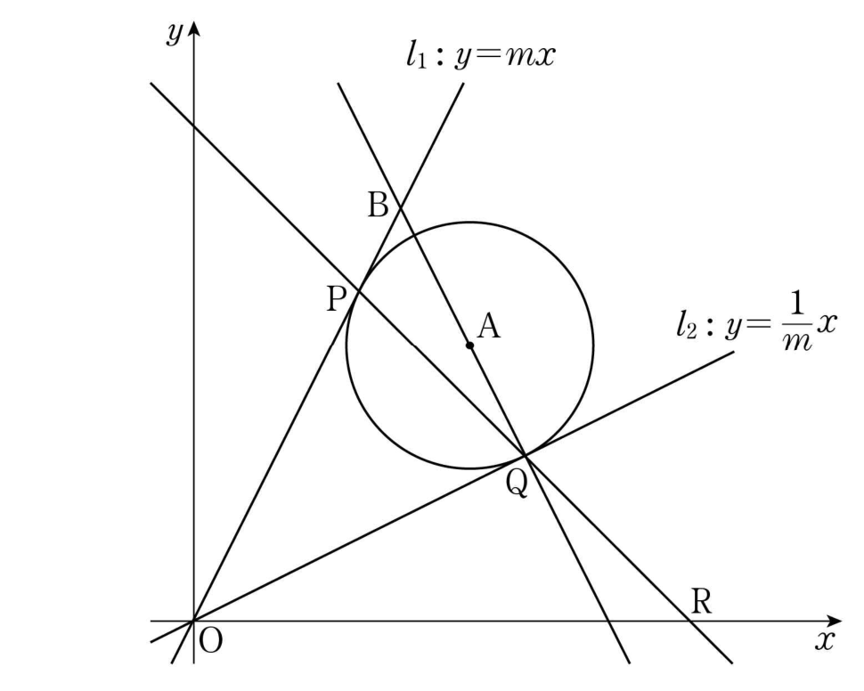
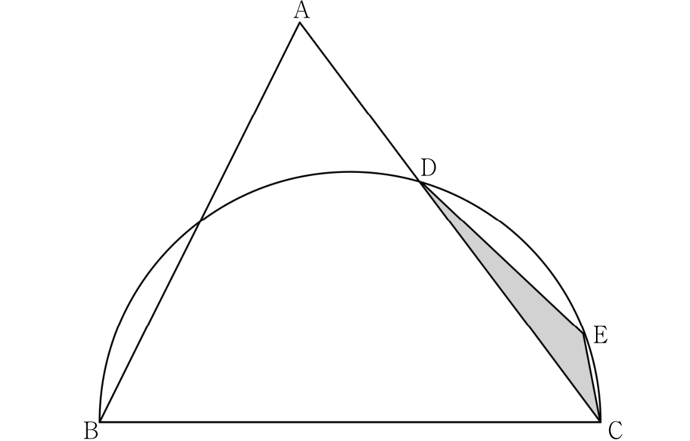

1. 2018년 3월 나형 12번 · 3점 · 고1 범위 · 원의 방정식 · G2M10-01#5
원본 (내부용)그림과 같이 좌표평면에서 원 $x^2 +y^2 -2x-4y+k=0$과 직선 $2x -y+5=0$이 두 점 $\mathrm{A}$, $\mathrm{B}$에서 만난다. $\overline{ \mathrm{AB}} =4$일 때, 상수 $k$의 값은? [3점]
① $-4$② $-3$③ $-2$④ $-1$⑤ $0$
원본 정답 ①
원본 풀이 (내부용)[출제의도] 피타고라스정리와 원과 직선 사이의 관계를 이용하여 문제를 해결한다.
원 \(x^2+y^2-2x-4y+k=0\)의 방정식을 변형하면
\(
(x-1)^2+(y-2)^2=5-k
\)
원의 중심을 \(C\), 반지름을 \(r\)이라 하면 중심은 \(C(1,2)\)이고
\(
r^2=5-k
\)
이다.
그림과 같이 점 \(C\)에서 선분 \(AB\)에 내린 수선의 발을 \(H\)라 하면
\(
\overline{AB}=4\text{이므로}\quad
\overline{AH}=\overline{BH}=2
\)
점 \(C(1,2)\)와 직선 \(2x-y+5=0\) 사이의 거리는
\(
\overline{CH}
=\frac{|2\times1-2+5|}{\sqrt{2^2+(-1)^2}}
=\frac5{\sqrt5}
=\sqrt5
\)
직각삼각형 \(CAH\)에서
\(
\begin{aligned}
r^2&=(\sqrt5)^2+2^2\\
&=5+4\\
&=9
\end{aligned}
\)
\(
r^2=5-k\text{이므로 }9=5-k
\)
\(
k=-4
\)
생성기 숫자판 1/6 · G2M10-01#5좌표평면에서 원 $x^{2}+y^{2}-6x-6y+k=0$과 직선 $3x-y+4=0$이 두 점 $\mathrm{A}$, $\mathrm{B}$에서 만납니다. $\overline{\mathrm{AB}}=6$일 때, 상수 $k$의 값으로 옳은 것을 고르세요.
① $-4$② $-3$③ $-2$④ $-1$⑤ $0$
정답④ $-1$ $\left(x-3\right)^{2}+\left(y-3\right)^{2}=18-k$이므로 원의 중심은 $\left(3,\ 3\right)$, 반지름의 길이의 제곱은 $18-k$ 원의 중심과 직선 $3x-y+4=0$ 사이의 거리는 $\frac{\left|3\times 3-3+4\right|}{\sqrt{10}}=\sqrt{10}$ $\overline{\mathrm{AB}}=6$이므로 $\left(\sqrt{10}\right)^{2}+3^{2}=18-k$ $19=18-k$이므로 $k=-1$
생성기 숫자판 2/6 · G2M10-01#5좌표평면에서 원 $x^{2}+y^{2}-2x-2y+k=0$과 직선 $2x-y-6=0$이 두 점 $\mathrm{A}$, $\mathrm{B}$에서 만납니다. $\overline{\mathrm{AB}}=2$일 때, 상수 $k$의 값으로 옳은 것을 고르세요.
① $-4$② $-3$③ $-2$④ $-1$⑤ $0$
정답① $-4$ $\left(x-1\right)^{2}+\left(y-1\right)^{2}=2-k$이므로 원의 중심은 $\left(1,\ 1\right)$, 반지름의 길이의 제곱은 $2-k$ 원의 중심과 직선 $2x-y-6=0$ 사이의 거리는 $\frac{\left|2\times 1-1-6\right|}{\sqrt{5}}=\sqrt{5}$ $\overline{\mathrm{AB}}=2$이므로 $\left(\sqrt{5}\right)^{2}+1^{2}=2-k$ $6=2-k$이므로 $k=-4$
생성기 숫자판 3/6 · G2M10-01#5좌표평면에서 원 $x^{2}+y^{2}-6x+4y+k=0$과 직선 $2x-y+2=0$이 두 점 $\mathrm{A}$, $\mathrm{B}$에서 만납니다. $\overline{\mathrm{AB}}=4$일 때, 상수 $k$의 값으로 옳은 것을 고르세요.
① $-12$② $-11$③ $-10$④ $-9$⑤ $-8$
정답② $-11$ $\left(x-3\right)^{2}+\left(y+2\right)^{2}=13-k$이므로 원의 중심은 $\left(3,\ -2\right)$, 반지름의 길이의 제곱은 $13-k$ 원의 중심과 직선 $2x-y+2=0$ 사이의 거리는 $\frac{\left|2\times 3-\left(-2\right)+2\right|}{\sqrt{5}}=2\sqrt{5}$ $\overline{\mathrm{AB}}=4$이므로 $\left(2\sqrt{5}\right)^{2}+2^{2}=13-k$ $24=13-k$이므로 $k=-11$
생성기 숫자판 4/6 · G2M10-01#5좌표평면에서 원 $x^{2}+y^{2}-6x+2y+k=0$과 직선 $2x-y-2=0$이 두 점 $\mathrm{A}$, $\mathrm{B}$에서 만납니다. $\overline{\mathrm{AB}}=2$일 때, 상수 $k$의 값으로 옳은 것을 고르세요.
① $1$② $2$③ $3$④ $4$⑤ $5$
정답④ $4$ $\left(x-3\right)^{2}+\left(y+1\right)^{2}=10-k$이므로 원의 중심은 $\left(3,\ -1\right)$, 반지름의 길이의 제곱은 $10-k$ 원의 중심과 직선 $2x-y-2=0$ 사이의 거리는 $\frac{\left|2\times 3-\left(-1\right)-2\right|}{\sqrt{5}}=\sqrt{5}$ $\overline{\mathrm{AB}}=2$이므로 $\left(\sqrt{5}\right)^{2}+1^{2}=10-k$ $6=10-k$이므로 $k=4$
생성기 숫자판 5/6 · G2M10-01#5좌표평면에서 원 $x^{2}+y^{2}-4x-6y+k=0$과 직선 $2x-y+4=0$이 두 점 $\mathrm{A}$, $\mathrm{B}$에서 만납니다. $\overline{\mathrm{AB}}=4$일 때, 상수 $k$의 값으로 옳은 것을 고르세요.
① $2$② $3$③ $4$④ $5$⑤ $6$
정답③ $4$ $\left(x-2\right)^{2}+\left(y-3\right)^{2}=13-k$이므로 원의 중심은 $\left(2,\ 3\right)$, 반지름의 길이의 제곱은 $13-k$ 원의 중심과 직선 $2x-y+4=0$ 사이의 거리는 $\frac{\left|2\times 2-3+4\right|}{\sqrt{5}}=\sqrt{5}$ $\overline{\mathrm{AB}}=4$이므로 $\left(\sqrt{5}\right)^{2}+2^{2}=13-k$ $9=13-k$이므로 $k=4$
생성기 숫자판 6/6 · G2M10-01#5좌표평면에서 원 $x^{2}+y^{2}-2x-2y+k=0$과 직선 $2x-y+4=0$이 두 점 $\mathrm{A}$, $\mathrm{B}$에서 만납니다. $\overline{\mathrm{AB}}=2$일 때, 상수 $k$의 값으로 옳은 것을 고르세요.
① $-6$② $-5$③ $-4$④ $-3$⑤ $-2$
정답③ $-4$ $\left(x-1\right)^{2}+\left(y-1\right)^{2}=2-k$이므로 원의 중심은 $\left(1,\ 1\right)$, 반지름의 길이의 제곱은 $2-k$ 원의 중심과 직선 $2x-y+4=0$ 사이의 거리는 $\frac{\left|2\times 1-1+4\right|}{\sqrt{5}}=\sqrt{5}$ $\overline{\mathrm{AB}}=2$이므로 $\left(\sqrt{5}\right)^{2}+1^{2}=2-k$ $6=2-k$이므로 $k=-4$
2. 2019년 3월 나형 10번 · 3점 · 고1 범위 · 원의 방정식 · G2M8-06#8
원본 (내부용)좌표평면에서 점 $\mathrm{A}$$( 4,3 )$과 원 $x^{2} +y^{2} =16$ 위의 점 $\mathrm{P}$에 대하여 선분 $\mathrm{AP}$의 길이의 최솟값은? [3점]
① $1$② $2$③ $3$④ $4$⑤ $5$
원본 정답 ①
원본 풀이 (내부용)[출제의도] 원의 성질을 이용하여 선분의 길이의 최솟값을 추론한다.
점 \(A\)의 좌표가 \((4,3)\)이므로
\(
\overline{OA}=\sqrt{4^2+3^2}=5
\)
점 \(P\)는 원 \(x^2+y^2=16\) 위의 점이므로
\(
\overline{OP}=4
\)
이때 그림과 같이 임의의 점 \(P\)에 대하여
\(
\overline{OA}\leq \overline{OP}+\overline{PA}
\)
가 성립하므로
\(
\overline{AP}\geq \overline{OA}-\overline{OP}=5-4=1
\)
따라서 선분 \(AP\)의 길이의 최솟값은 \(1\)이다.
생성기 숫자판 1/6 · G2M8-06#8좌표평면에서 점 $\mathrm{A}\left(0,\ 5\right)$와 원 $x^{2}+y^{2}=9$ 위의 점 $\mathrm{P}$에 대하여 선분 $\mathrm{AP}$의 길이의 최솟값으로 옳은 것을 고르세요.
① $2$② $3$③ $4$④ $5$⑤ $6$
정답① $2$ $\overline{\mathrm{OA}}=\sqrt{0^{2}+5^{2}}=5$이고 원의 반지름의 길이는 $3$이므로 점 $\mathrm{A}$는 원의 외부에 있습니다. 선분 $\mathrm{AP}$의 길이의 최솟값은 $\overline{\mathrm{OA}}-3=5-3=2$
숫자: 원본 4 3 16 → 쌍둥이 0 5 9
생성기 숫자판 2/6 · G2M8-06#8좌표평면에서 점 $\mathrm{A}\left(5,\ 0\right)$과 원 $x^{2}+y^{2}=9$ 위의 점 $\mathrm{P}$에 대하여 선분 $\mathrm{AP}$의 길이의 최솟값으로 옳은 것을 고르세요.
① $1$② $2$③ $3$④ $4$⑤ $5$
정답② $2$ $\overline{\mathrm{OA}}=\sqrt{5^{2}+0^{2}}=5$이고 원의 반지름의 길이는 $3$이므로 점 $\mathrm{A}$는 원의 외부에 있습니다. 선분 $\mathrm{AP}$의 길이의 최솟값은 $\overline{\mathrm{OA}}-3=5-3=2$
숫자: 원본 4 3 16 → 쌍둥이 5 0 9
생성기 숫자판 3/6 · G2M8-06#8좌표평면에서 점 $\mathrm{A}\left(-6,\ 8\right)$과 원 $x^{2}+y^{2}=25$ 위의 점 $\mathrm{P}$에 대하여 선분 $\mathrm{AP}$의 길이의 최솟값으로 옳은 것을 고르세요.
① $1$② $2$③ $3$④ $4$⑤ $5$
정답⑤ $5$ $\overline{\mathrm{OA}}=\sqrt{-6^{2}+8^{2}}=10$이고 원의 반지름의 길이는 $5$이므로 점 $\mathrm{A}$는 원의 외부에 있습니다. 선분 $\mathrm{AP}$의 길이의 최솟값은 $\overline{\mathrm{OA}}-5=10-5=5$
숫자: 원본 4 3 16 → 쌍둥이 6 8 25
생성기 숫자판 4/6 · G2M8-06#8좌표평면에서 점 $\mathrm{A}\left(5,\ 12\right)$와 원 $x^{2}+y^{2}=64$ 위의 점 $\mathrm{P}$에 대하여 선분 $\mathrm{AP}$의 길이의 최솟값으로 옳은 것을 고르세요.
① $1$② $2$③ $3$④ $4$⑤ $5$
정답⑤ $5$ $\overline{\mathrm{OA}}=\sqrt{5^{2}+12^{2}}=13$이고 원의 반지름의 길이는 $8$이므로 점 $\mathrm{A}$는 원의 외부에 있습니다. 선분 $\mathrm{AP}$의 길이의 최솟값은 $\overline{\mathrm{OA}}-8=13-8=5$
숫자: 원본 4 3 16 → 쌍둥이 5 12 64
생성기 숫자판 5/6 · G2M8-06#8좌표평면에서 점 $\mathrm{A}\left(8,\ 6\right)$과 원 $x^{2}+y^{2}=25$ 위의 점 $\mathrm{P}$에 대하여 선분 $\mathrm{AP}$의 길이의 최솟값으로 옳은 것을 고르세요.
① $3$② $4$③ $5$④ $6$⑤ $7$
정답③ $5$ $\overline{\mathrm{OA}}=\sqrt{8^{2}+6^{2}}=10$이고 원의 반지름의 길이는 $5$이므로 점 $\mathrm{A}$는 원의 외부에 있습니다. 선분 $\mathrm{AP}$의 길이의 최솟값은 $\overline{\mathrm{OA}}-5=10-5=5$
숫자: 원본 4 3 16 → 쌍둥이 8 6 25
생성기 숫자판 6/6 · G2M8-06#8좌표평면에서 점 $\mathrm{A}\left(8,\ 6\right)$과 원 $x^{2}+y^{2}=81$ 위의 점 $\mathrm{P}$에 대하여 선분 $\mathrm{AP}$의 길이의 최솟값으로 옳은 것을 고르세요.
① $1$② $2$③ $3$④ $4$⑤ $5$
정답① $1$ $\overline{\mathrm{OA}}=\sqrt{8^{2}+6^{2}}=10$이고 원의 반지름의 길이는 $9$이므로 점 $\mathrm{A}$는 원의 외부에 있습니다. 선분 $\mathrm{AP}$의 길이의 최솟값은 $\overline{\mathrm{OA}}-9=10-9=1$
숫자: 원본 4 3 16 → 쌍둥이 8 6 81
3. 2019년 3월 나형 17번 · 4점 · 고1 범위 · 원의 방정식 · 4점 쌍둥이
원본 (내부용)좌표평면에서 원 $C:x^{2} +y^{2} -4x-2ay+a^{2} -9=0$이 다음 조건을 만족시킨다. (가) 원 $C$는 원점을 지난다. (나) 원 $C$는 직선 $y= -2$와 서로 다른 두 점에서 만난다. 원 $C$와 직선 $y= -2$가 만나는 두 점 사이의 거리는? (단, $a$는 상수이다.) [4점]
① $4 \sqrt{2}$② $6$③ $2 \sqrt{10}$④ $2 \sqrt{11}$⑤ $4 \sqrt{3}$
원본 정답 ⑤
원본 풀이 (내부용)[출제의도] 원과 직선의 위치 관계와 관련된 문제를 해결한다.
조건 (가)에서 원 \(C\):
\(
x^2+y^2-4x-2ay+a^2-9=0
\)
이 원점을 지나므로 \(x=0,\ y=0\)을 대입하면
\(
a^2-9=0,\quad a^2=9
\)
\(
a=-3\text{ 또는 }a=3
\)
\(a=-3\)일 때, 원 \(C\)의 방정식은
\(
x^2+y^2-4x+6y=0,\quad (x-2)^2+(y+3)^2=13
\)
\(a=3\)일 때, 원 \(C\)의 방정식은
\(
x^2+y^2-4x-6y=0,\quad (x-2)^2+(y-3)^2=13
\)
이때 \(a=3\)이면 원 \(C\)는 직선 \(y=-2\)와 만나지 않으므로 조건 (나)에 의하여 \(a=-3\)이다.
원 \(C\)와 직선 \(y=-2\)를 연립하면
\(
(x-2)^2+(-2+3)^2=13
\)
\(
(x-2)^2=12
\)
\(
x=2\pm2\sqrt3
\)
따라서 원 \(C\)와 직선 \(y=-2\)가 만나는 두 점의 좌표는 각각
\(
(2-2\sqrt3,-2),\quad(2+2\sqrt3,-2)
\)
이므로 두 점 사이의 거리는
\(
(2+2\sqrt3)-(2-2\sqrt3)=4\sqrt3
\)
**[다른 풀이]**
\(a=-3\)일 때, 원 \(C\)의 방정식은
\(
x^2+y^2-4x+6y=0,\quad (x-2)^2+(y+3)^2=13
\)
따라서 원 \(C\)의 중심은 \(A(2,-3)\)이고, 반지름의 길이는 \(\sqrt{13}\)이다.
원의 중심 \(A(2,-3)\)에서 직선 \(y=-2\)에 내린 수선의 발을 \(H\)라 하고, 원 \(C\)와 직선 \(y=-2\)가 만나는 두 점을 각각 \(P,\ Q\)라 하면
\(
\overline{AP}=\sqrt{13},\quad \overline{AH}=1
\)
이므로
\(
\overline{PH}=\sqrt{(\sqrt{13})^2-1^2}=2\sqrt3
\)
따라서
\(
\overline{PQ}=2\overline{PH}=4\sqrt3
\)
쌍둥이 1/5 · 4점 쌍둥이중심이 $(5,-2)$이고 반지름이 $6$인 원과 직선 $y=1$이 만납니다. 두 교점 사이의 거리를 구하세요.
① $2\sqrt{23}$② $2\sqrt{25}$③ $2\sqrt{27}$④ $2\sqrt{29}$⑤ $2\sqrt{31}$
정답③ $2\sqrt{27}$ 원의 중심에서 직선까지의 거리는 $|1-(-2)|=3$입니다. 현의 길이는 $2\sqrt{6^2-3^2}=2\sqrt{27}$이므로 답은 $2\sqrt{27}$입니다.
숫자: 원본 4 2 9 0 2 2 → 쌍둥이 5 2 6 1 · 같은 수: 2
쌍둥이 2/5 · 4점 쌍둥이중심이 $(3,4)$이고 반지름이 $5$인 원과 직선 $y=6$이 만납니다. 두 교점 사이의 거리를 구하세요.
① $2\sqrt{17}$② $2\sqrt{19}$③ $2\sqrt{21}$④ $2\sqrt{23}$⑤ $2\sqrt{25}$
정답③ $2\sqrt{21}$ 원의 중심에서 직선까지의 거리는 $|6-(4)|=2$입니다. 현의 길이는 $2\sqrt{5^2-2^2}=2\sqrt{21}$이므로 답은 $2\sqrt{21}$입니다.
숫자: 원본 4 2 9 0 2 2 → 쌍둥이 3 4 5 6 · 같은 수: 4
쌍둥이 3/5 · 4점 쌍둥이중심이 $(-2,1)$이고 반지름이 $5$인 원과 직선 $y=4$가 만납니다. 두 교점 사이의 거리를 구하세요.
① $10$② $12$③ $4$④ $6$⑤ $8$
정답⑤ $8$ 원의 중심에서 직선까지의 거리는 $|4-(1)|=3$입니다. 현의 길이는 $2\sqrt{5^2-3^2}=2\sqrt{16}$이므로 답은 $8$입니다.
숫자: 원본 4 2 9 0 2 2 → 쌍둥이 2 1 5 4 · 같은 수: 2 4
쌍둥이 4/5 · 4점 쌍둥이중심이 $(1,4)$이고 반지름이 $5$인 원과 직선 $y=0$이 만납니다. 두 교점 사이의 거리를 구하세요.
① $10$② $2$③ $4$④ $6$⑤ $8$
정답④ $6$ 원의 중심에서 직선까지의 거리는 $|0-(4)|=4$입니다. 현의 길이는 $2\sqrt{5^2-4^2}=2\sqrt{9}$이므로 답은 $6$입니다.
숫자: 원본 4 2 9 0 2 2 → 쌍둥이 1 4 5 0 · 같은 수: 0 4
쌍둥이 5/5 · 4점 쌍둥이중심이 $(-4,3)$이고 반지름이 $7$인 원과 직선 $y=-1$이 만납니다. 두 교점 사이의 거리를 구하세요.
① $2\sqrt{29}$② $2\sqrt{31}$③ $2\sqrt{33}$④ $2\sqrt{35}$⑤ $2\sqrt{37}$
정답③ $2\sqrt{33}$ 원의 중심에서 직선까지의 거리는 $|-1-(3)|=4$입니다. 현의 길이는 $2\sqrt{7^2-4^2}=2\sqrt{33}$이므로 답은 $2\sqrt{33}$입니다.
숫자: 원본 4 2 9 0 2 2 → 쌍둥이 4 3 7 1 · 같은 수: 4
4. 2019년 3월 나형 29번 · 4점 · 고1 범위 · 원의 방정식 · 4점 쌍둥이
원본 (내부용)좌표평면에 원 $C_{1} : ( x+7 )^{2} + ( y-2 )^{2} =20$이 있다. 그림과 같이 점 $\mathrm{P}$$( a,0 )$에서 원 $C_{1}$에 그은 두 접선을 $l_{1}$, $l_{2}$라 하자. 두 직선 $l_{1}$, $l_{2}$가 원 $C_{2} :x^{2} + ( y-b )^{2} =5$에 모두 접할 때, 두 직선 $l_{1}$, $l_{2}$의 기울기의 곱을 $c$라 하자. $11 ( a+b+c )$의 값을 구하시오. (단, $a$, $b$는 양의 상수이다.) [4점]
원본 정답 87
원본 풀이 (내부용)[출제의도] 원과 직선의 위치 관계와 관련된 문제를 해결한다.
두 원 \(C_1,\ C_2\)의 중심을 각각 \(A,\ B\)라 하면 두 점 \(A,\ B\)의 좌표는 각각 \((-7,2),\ (0,b)\)이다.
그림과 같이 두 점 \(A,\ B\)에서 직선 \(l_1\)에 내린 수선의 발을 각각 \(H,\ I\)라 하면
\(
AH=2\sqrt5,\qquad BI=\sqrt5
\)
이므로 두 삼각형 \(PAH,\ PBI\)는 닮음비
\(
AH:BI=2:1
\)
인 닮은 도형이다.
그림에서 점 \(B\)는 선분 \(AP\)의 중점이므로
\(
\frac{-7+a}{2}=0,\qquad \frac{2+0}{2}=b
\)
\(
a=7,\qquad b=1\quad\cdots\text{㉠}
\)
점 \(P(7,0)\)을 지나고 점 \(B(0,1)\)에서의 거리가 \(\sqrt5\)인 직선을
\(
y=mx\quad(m\text{은 상수})
\)
로 놓으면
\(
mx-y-7m=0
\)
이고,
\(
\frac{|m\times0-1-7m|}{\sqrt{m^2+1}}=\sqrt5
\)
이므로
\(
|-7m-1|=\sqrt{5(m^2+1)}\quad\cdots\text{㉡}
\)
㉡의 양변을 제곱하면
\(
49m^2+14m+1=5m^2+5
\)
\(
44m^2+14m-4=0,\qquad 22m^2+7m-2=0
\)
\(
(2m+1)(11m-2)=0
\)
이므로
\(
m=-\frac12\quad\text{또는}\quad m=\frac2{11}
\)
따라서 두 직선 \(l_1,\ l_2\)의 기울기의 곱은
\(
\left(-\frac12\right)\times\frac2{11}=-\frac1{11}
\)
이므로
\(
c=-\frac1{11}\quad\cdots\text{㉢}
\)
㉠, ㉢에서
\(
11(a+b+c)=11\left(7+1-\frac1{11}\right)=87
\)
쌍둥이 1/5 · 4점 쌍둥이좌표평면에 원 $C_{1}:(x+5)^{2}+(y-2)^{2}=12$가 있습니다. 점 $\mathrm{P}(a,\ 0)$에서 원 $C_{1}$에 그은 두 접선을 $l_{1}$, $l_{2}$라 합니다. 두 직선 $l_{1}$, $l_{2}$가 원 $C_{2}:x^{2}+(y-b)^{2}=3$에 모두 접할 때, 두 직선 $l_{1}$, $l_{2}$의 기울기의 곱을 $c$라 합니다. $11(a+b+c)$의 값을 구하세요. (단, $a$, $b$는 양의 상수입니다.)
정답$65$ 두 원의 반지름의 비는 $2:1$이므로 두 공통접선이 만나는 점 $\mathrm{P}$는 두 중심 $(-5,\ 2)$, $(0,\ b)$를 잇는 선분을 $2:1$로 외분하는 점입니다 $\mathrm{P}=\left(\frac{2\times0-(-5)}{1},\ \frac{2b-2}{1}\right)$의 $y$좌표가 $0$이므로 $b=1$, $a=5$ 접선 $y=m(x-5)$와 중심 $(-5,\ 2)$ 사이의 거리가 $\sqrt{12}$이므로 $(10m+2)^{2}=12(1+m^{2})$, 즉 $88m^{2}+40m-8=0$ 근과 계수의 관계에서 $c=-\frac{1}{11}$이므로 $11(a+b+c)=11\times\left(5+1-\frac{1}{11}\right)=65$
쌍둥이 2/5 · 4점 쌍둥이좌표평면에 원 $C_{1}:(x+9)^{2}+(y-2)^{2}=32$가 있습니다. 점 $\mathrm{P}(a,\ 0)$에서 원 $C_{1}$에 그은 두 접선을 $l_{1}$, $l_{2}$라 합니다. 두 직선 $l_{1}$, $l_{2}$가 원 $C_{2}:x^{2}+(y-b)^{2}=8$에 모두 접할 때, 두 직선 $l_{1}$, $l_{2}$의 기울기의 곱을 $c$라 합니다. $73(a+b+c)$의 값을 구하세요. (단, $a$, $b$는 양의 상수입니다.)
정답$723$ 두 원의 반지름의 비는 $2:1$이므로 두 공통접선이 만나는 점 $\mathrm{P}$는 두 중심 $(-9,\ 2)$, $(0,\ b)$를 잇는 선분을 $2:1$로 외분하는 점입니다 $\mathrm{P}=\left(\frac{2\times0-(-9)}{1},\ \frac{2b-2}{1}\right)$의 $y$좌표가 $0$이므로 $b=1$, $a=9$ 접선 $y=m(x-9)$와 중심 $(-9,\ 2)$ 사이의 거리가 $\sqrt{32}$이므로 $(18m+2)^{2}=32(1+m^{2})$, 즉 $292m^{2}+72m-28=0$ 근과 계수의 관계에서 $c=-\frac{7}{73}$이므로 $73(a+b+c)=73\times\left(9+1-\frac{7}{73}\right)=723$
쌍둥이 3/5 · 4점 쌍둥이좌표평면에 원 $C_{1}:(x+6)^{2}+(y-4)^{2}=20$이 있습니다. 점 $\mathrm{P}(a,\ 0)$에서 원 $C_{1}$에 그은 두 접선을 $l_{1}$, $l_{2}$라 합니다. 두 직선 $l_{1}$, $l_{2}$가 원 $C_{2}:x^{2}+(y-b)^{2}=5$에 모두 접할 때, 두 직선 $l_{1}$, $l_{2}$의 기울기의 곱을 $c$라 합니다. $31(a+b+c)$의 값을 구하세요. (단, $a$, $b$는 양의 상수입니다.)
정답$247$ 두 원의 반지름의 비는 $2:1$이므로 두 공통접선이 만나는 점 $\mathrm{P}$는 두 중심 $(-6,\ 4)$, $(0,\ b)$를 잇는 선분을 $2:1$로 외분하는 점입니다 $\mathrm{P}=\left(\frac{2\times0-(-6)}{1},\ \frac{2b-4}{1}\right)$의 $y$좌표가 $0$이므로 $b=2$, $a=6$ 접선 $y=m(x-6)$과 중심 $(-6,\ 4)$ 사이의 거리가 $\sqrt{20}$이므로 $(12m+4)^{2}=20(1+m^{2})$, 즉 $124m^{2}+96m-4=0$ 근과 계수의 관계에서 $c=-\frac{1}{31}$이므로 $31(a+b+c)=31\times\left(6+2-\frac{1}{31}\right)=247$
쌍둥이 4/5 · 4점 쌍둥이좌표평면에 원 $C_{1}:(x+8)^{2}+(y-2)^{2}=20$이 있습니다. 점 $\mathrm{P}(a,\ 0)$에서 원 $C_{1}$에 그은 두 접선을 $l_{1}$, $l_{2}$라 합니다. 두 직선 $l_{1}$, $l_{2}$가 원 $C_{2}:x^{2}+(y-b)^{2}=5$에 모두 접할 때, 두 직선 $l_{1}$, $l_{2}$의 기울기의 곱을 $c$라 합니다. $59(a+b+c)$의 값을 구하세요. (단, $a$, $b$는 양의 상수입니다.)
정답$527$ 두 원의 반지름의 비는 $2:1$이므로 두 공통접선이 만나는 점 $\mathrm{P}$는 두 중심 $(-8,\ 2)$, $(0,\ b)$를 잇는 선분을 $2:1$로 외분하는 점입니다 $\mathrm{P}=\left(\frac{2\times0-(-8)}{1},\ \frac{2b-2}{1}\right)$의 $y$좌표가 $0$이므로 $b=1$, $a=8$ 접선 $y=m(x-8)$과 중심 $(-8,\ 2)$ 사이의 거리가 $\sqrt{20}$이므로 $(16m+2)^{2}=20(1+m^{2})$, 즉 $236m^{2}+64m-16=0$ 근과 계수의 관계에서 $c=-\frac{4}{59}$이므로 $59(a+b+c)=59\times\left(8+1-\frac{4}{59}\right)=527$
쌍둥이 5/5 · 4점 쌍둥이좌표평면에 원 $C_{1}:(x+7)^{2}+(y-4)^{2}=20$이 있습니다. 점 $\mathrm{P}(a,\ 0)$에서 원 $C_{1}$에 그은 두 접선을 $l_{1}$, $l_{2}$라 합니다. 두 직선 $l_{1}$, $l_{2}$가 원 $C_{2}:x^{2}+(y-b)^{2}=5$에 모두 접할 때, 두 직선 $l_{1}$, $l_{2}$의 기울기의 곱을 $c$라 합니다. $44(a+b+c)$의 값을 구하세요. (단, $a$, $b$는 양의 상수입니다.)
정답$395$ 두 원의 반지름의 비는 $2:1$이므로 두 공통접선이 만나는 점 $\mathrm{P}$는 두 중심 $(-7,\ 4)$, $(0,\ b)$를 잇는 선분을 $2:1$로 외분하는 점입니다 $\mathrm{P}=\left(\frac{2\times0-(-7)}{1},\ \frac{2b-4}{1}\right)$의 $y$좌표가 $0$이므로 $b=2$, $a=7$ 접선 $y=m(x-7)$과 중심 $(-7,\ 4)$ 사이의 거리가 $\sqrt{20}$이므로 $(14m+4)^{2}=20(1+m^{2})$, 즉 $176m^{2}+112m-4=0$ 근과 계수의 관계에서 $c=-\frac{1}{44}$이므로 $44(a+b+c)=44\times\left(7+2-\frac{1}{44}\right)=395$
원본 (내부용)좌표평면에서 원 $x^2 + y^2 =1$ 위의 점 중 제$1$사분면에 있는 점 $\mathrm{P}$에서의 접선이 점 $( 0,3 )$을 지날 때, 점 $\mathrm{P}$의 $x$좌표는? [3점]
① $\frac{2}{3}$② $\frac{\sqrt{5}}{3}$③ $\sqrt\frac{6}{3}$④ $\frac{\sqrt{7}}{3}$⑤ $\frac{2\sqrt{2}}{3}$
원본 정답 ⑤
원본 풀이 (내부용)[출제의도] 원과 직선의 위치 관계를 이해하여 점의 좌표를 구한다.
원 \(x^2+y^2=1\) 위의 점 중 제1사분면에 있는 점 \(P\)의 좌표를 \((x_1,y_1)\) \((x_1>0,\ y_1>0)\)이라 하자. 원 \(x^2+y^2=1\) 위의 점 \(P(x_1,y_1)\)에서의 접선의 방정식은
\(
x_1x+y_1y=1
\)
이다. 이 직선이 점 \((0,3)\)을 지나므로
\(
0+3y_1=1,\quad y_1=\frac13
\)
점 \(P(x_1,y_1)\)은 원 \(x^2+y^2=1\) 위의 점이므로
\(
x_1^2+y_1^2=1
\)
\(
x_1^2+\left(\frac13\right)^2=1
\)
\(
x_1^2=\frac89
\)
\(x_1>0\)이므로
\(
x_1=\frac{2\sqrt2}{3}
\)
[다른 풀이 1]
점 \(P\)에서의 접선의 기울기를 \(m\)이라 하면 이 직선이 점 \((0,3)\)을 지나므로 접선의 방정식은 \(y=mx+3\)이다. 직선 \(y=mx+3\)과 원의 중심 \((0,0)\) 사이의 거리는 원의 반지름의 길이 1과 같아야 한다.
\(
\frac{|0-0+3|}{\sqrt{m^2+(-1)^2}}=1
\)
\(
\sqrt{m^2+1}=3
\)
\(
m^2=8
\)
이 원과 직선이 제1사분면에서 접하므로 \(m<0\)이어야 한다. 따라서
\(
m=-2\sqrt2
\)
두 식 \(y=-2\sqrt2x+3,\ x^2+y^2=1\)을 연립하여 점 \(P\)의 \(x\)좌표를 구하면
\(
x^2+(-2\sqrt2x+3)^2=1
\)
\(
9x^2-12\sqrt2x+8=0
\)
\(
(3x-2\sqrt2)^2=0
\)
\(
x=\frac{2\sqrt2}{3}
\)
[다른 풀이 2]
점 \((0,3)\)을 \(A\)라 하고 점 \(P\)에서 \(y\)축에 내린 수선의 발을 \(H\)라 하자. 점 \(AP\)가 점 \(P\)에서 원 \(x^2+y^2=1\)에 접하므로 원점 \(O\)에 대하여 \(\angle OPA=90^\circ\). 직각삼각형 \(OPA\)에서 \(OA=3,\ OP=1\)이므로
\(
AP=\sqrt{3^2-1^2}=2\sqrt2
\)
삼각형 \(OPA\)의 넓이는
\(
\frac12\times OA\times PH=\frac12\times OP\times AP
\)
\(
3\times PH=2\sqrt2,\quad PH=\frac{2\sqrt2}{3}
\)
점 \(P\)의 \(x\)좌표는 선분 \(PH\)의 길이와 같으므로 구하는 값은 \(\frac{2\sqrt2}{3}\)이다.
그림: 단위원 \(x^2+y^2=1\)과 제1사분면의 접점 \(P\), \(y\)축 위의 점 \(A=(0,3)\), \(P\)에서 \(y\)축에 내린 수선의 발 \(H\)를 표시한다. \(O,H,P\)는 수평선 위에 있고 \(AP\perp OP\)이다.
원본 PDF 7쪽
## 해설 (계속)
생성기 숫자판 1/6 · G2H-05b#0좌표평면에서 원 $x^{2}+y^{2}=9$ 위의 점 중 제$1$사분면에 있는 점 $\mathrm{P}$에서의 접선이 점 $\left(0,\ 4\right)$를 지날 때, 점 $\mathrm{P}$의 $x$좌표로 옳은 것을 고르세요.
① $\frac{\sqrt{7}}{4}$② $\frac{\sqrt{7}}{2}$③ $\frac{3\sqrt{7}}{4}$④ $\sqrt{7}$⑤ $\frac{5\sqrt{7}}{4}$
생성기 숫자판 2/6 · G2H-05b#0좌표평면에서 원 $x^{2}+y^{2}=576$ 위의 점 중 제$1$사분면에 있는 점 $\mathrm{P}$에서의 접선이 점 $\left(0,\ 25\right)$를 지날 때, 점 $\mathrm{P}$의 $x$좌표로 옳은 것을 고르세요.
① $\frac{1}{2}$② $\frac{2}{3}$③ $1$④ $2$⑤ $\frac{24\sqrt{49}}{25}$
생성기 숫자판 3/6 · G2H-05b#0좌표평면에서 원 $x^{2}+y^{2}=4$ 위의 점 중 제$1$사분면에 있는 점 $\mathrm{P}$에서의 접선이 점 $\left(0,\ 5\right)$를 지날 때, 점 $\mathrm{P}$의 $x$좌표로 옳은 것을 고르세요.
① $\frac{\sqrt{21}}{5}$② $\frac{2\sqrt{21}}{5}$③ $\frac{3\sqrt{21}}{5}$④ $\frac{4\sqrt{21}}{5}$⑤ $\sqrt{21}$
생성기 숫자판 4/6 · G2H-05b#0좌표평면에서 원 $x^{2}+y^{2}=9$ 위의 점 중 제$1$사분면에 있는 점 $\mathrm{P}$에서의 접선이 점 $\left(0,\ 6\right)$을 지날 때, 점 $\mathrm{P}$의 $x$좌표로 옳은 것을 고르세요.
① $\frac{\sqrt{3}}{2}$② $\sqrt{3}$③ $\frac{3\sqrt{3}}{2}$④ $2\sqrt{3}$⑤ $\frac{5\sqrt{3}}{2}$
생성기 숫자판 5/6 · G2H-05b#0좌표평면에서 원 $x^{2}+y^{2}=9$ 위의 점 중 제$1$사분면에 있는 점 $\mathrm{P}$에서의 접선이 점 $\left(0,\ 5\right)$를 지날 때, 점 $\mathrm{P}$의 $x$좌표로 옳은 것을 고르세요.
① $2$② $\frac{11}{5}$③ $\frac{12}{5}$④ $\frac{13}{5}$⑤ $\frac{14}{5}$
생성기 숫자판 6/6 · G2H-05b#0좌표평면에서 원 $x^{2}+y^{2}=4$ 위의 점 중 제$1$사분면에 있는 점 $\mathrm{P}$에서의 접선이 점 $\left(0,\ 3\right)$을 지날 때, 점 $\mathrm{P}$의 $x$좌표로 옳은 것을 고르세요.
① $\frac{\sqrt{5}}{3}$② $\frac{2\sqrt{5}}{3}$③ $\sqrt{5}$④ $\frac{4\sqrt{5}}{3}$⑤ $\frac{5\sqrt{5}}{3}$
원본 (내부용)원 $x^{2} +y^{2} -8x+6y=0$의 넓이는 $k \pi$이다. $k$의 값을 구하시오. [3점]
원본 정답 25
원본 풀이 (내부용)[출제의도] 원의 방정식을 이해하여 원의 넓이를 구한다.
\(
x^2+y^2-8x+6y=0
\)
에서
\(
x^2-8x+16+y^2+6y+9=25
\)
\(
(x-4)^2+(y+3)^2=25
\)
따라서 원 \(x^2+y^2-8x+6y=0\)은 중심의 좌표가 \((4,-3)\)이고 반지름의 길이가 5이므로 원의 넓이는
\(
5^2\times\pi=25\pi
\)
따라서 \(k=25\)이다.
생성기 숫자판 1/6 · G2H-05#3원 $x^{2}+y^{2}+2x+8y-19=0$의 넓이가 $k\pi$일 때, $k$의 값을 구하세요.
정답$36$ $\left(x+1\right)^{2}+\left(y+4\right)^{2}=36$이므로 반지름의 길이는 $6$ 넓이는 $36\pi$이므로 $k=36$
숫자: 원본 8 6 0 → 쌍둥이 2 8 19 0 · 같은 수: 0 8
생성기 숫자판 2/6 · G2H-05#3원 $x^{2}+y^{2}-4x-2y-44=0$의 넓이가 $k\pi$일 때, $k$의 값을 구하세요.
정답$49$ $\left(x-2\right)^{2}+\left(y-1\right)^{2}=49$이므로 반지름의 길이는 $7$ 넓이는 $49\pi$이므로 $k=49$
숫자: 원본 8 6 0 → 쌍둥이 4 2 44 0 · 같은 수: 0
생성기 숫자판 3/6 · G2H-05#3원 $x^{2}+y^{2}-4x-10y+20=0$의 넓이가 $k\pi$일 때, $k$의 값을 구하세요.
정답$9$ $\left(x-2\right)^{2}+\left(y-5\right)^{2}=9$이므로 반지름의 길이는 $3$ 넓이는 $9\pi$이므로 $k=9$
숫자: 원본 8 6 0 → 쌍둥이 4 10 20 0 · 같은 수: 0
생성기 숫자판 4/6 · G2H-05#3원 $x^{2}+y^{2}-8x-2y-8=0$의 넓이가 $k\pi$일 때, $k$의 값을 구하세요.
정답$25$ $\left(x-4\right)^{2}+\left(y-1\right)^{2}=25$이므로 반지름의 길이는 $5$ 넓이는 $25\pi$이므로 $k=25$
숫자: 원본 8 6 0 → 쌍둥이 8 2 8 0 · 같은 수: 0 8
생성기 숫자판 5/6 · G2H-05#3원 $x^{2}+y^{2}+8x-2y-19=0$의 넓이가 $k\pi$일 때, $k$의 값을 구하세요.
정답$36$ $\left(x+4\right)^{2}+\left(y-1\right)^{2}=36$이므로 반지름의 길이는 $6$ 넓이는 $36\pi$이므로 $k=36$
숫자: 원본 8 6 0 → 쌍둥이 8 2 19 0 · 같은 수: 0 8
생성기 숫자판 6/6 · G2H-05#3원 $x^{2}+y^{2}+8x+4y-16=0$의 넓이가 $k\pi$일 때, $k$의 값을 구하세요.
정답$36$ $\left(x+4\right)^{2}+\left(y+2\right)^{2}=36$이므로 반지름의 길이는 $6$ 넓이는 $36\pi$이므로 $k=36$
숫자: 원본 8 6 0 → 쌍둥이 8 4 16 0 · 같은 수: 0 8
7. 2021년 3월 10번 · 3점 · 고1 범위 · 원의 방정식 · G2M8-06#6
원본 (내부용)직선 $x+2y+5=0$이 원 $( x-1 )^{2} +y^{2} =r^{2}$에 접할 때, 양수 $r$의 값은? [3점]
① $\frac{7 \sqrt{5}}{5}$② $\frac{6 \sqrt{5}}{5}$③ $\sqrt{5}$④ $\frac{4 \sqrt{5}}{5}$⑤ $\frac{3 \sqrt{5}}{5}$
원본 정답 ②
원본 풀이 (내부용)[출제의도] 직선에 접하는 원의 반지름의 길이를 구하는 문제를 해결한다.
직선 \(x+2y+5=0\)에 접하고 원의 중심이 \((1,0)\)인 원의 반지름의 길이 \(r\)는 원의 중심 \((1,0)\)과 직선 \(x+2y+5=0\) 사이의 거리와 같다.
\(
r=\frac{|1\times1+2\times0+5|}{\sqrt{1^2+2^2}}
=\frac{6\sqrt5}{5}
\)
**[다른 풀이]**
\(
x+2y+5=0
\)
에서 \(x=-2y-5\).
\(x=-2y-5\)를 \((x-1)^2+y^2=r^2\)에 대입하면
\(
\begin{aligned}
\{(-2y-5)-1\}^2+y^2&=r^2\\
5y^2+24y+36-r^2&=0
\end{aligned}
\)
이차방정식 \(5y^2+24y+36-r^2=0\)의 판별식을 \(D\)라 할 때 \(D=0\)이어야 한다.
\(
\begin{aligned}
\frac D4
&=12^2-5(36-r^2)\\
&=5r^2-36=0
\end{aligned}
\)
이므로
\(
r^2=\frac{36}{5}
\)
\(r>0\)이므로
\(
r=\frac{6\sqrt5}{5}
\)
생성기 숫자판 1/6 · G2M8-06#6직선 $2x-y-4=0$이 원 $\left(x-1\right)^{2}+y^{2}=r^{2}$에 접할 때, 양수 $r$의 값으로 옳은 것을 고르세요.
① $\frac{\sqrt{5}}{5}$② $\frac{2\sqrt{5}}{5}$③ $\frac{3\sqrt{5}}{5}$④ $\frac{4\sqrt{5}}{5}$⑤ $\sqrt{5}$
정답② $\frac{2\sqrt{5}}{5}$ 원의 중심 $\left(1,\ 0\right)$과 직선 $2x-y-4=0$ 사이의 거리가 반지름의 길이 $r$과 같으므로 $r=\frac{\left|2\times 1+\left(-1\right)\times 0-4\right|}{\sqrt{2^{2}+\left(-1\right)^{2}}}=\frac{2}{\sqrt{5}}=\frac{2\sqrt{5}}{5}$
숫자: 원본 2 5 0 1 → 쌍둥이 2 4 0 1 · 같은 수: 0 1 2
생성기 숫자판 2/6 · G2M8-06#6직선 $x-2y-6=0$이 원 $\left(x+2\right)^{2}+y^{2}=r^{2}$에 접할 때, 양수 $r$의 값으로 옳은 것을 고르세요.
① $\frac{6\sqrt{5}}{5}$② $\frac{7\sqrt{5}}{5}$③ $\frac{8\sqrt{5}}{5}$④ $\frac{9\sqrt{5}}{5}$⑤ $2\sqrt{5}$
정답③ $\frac{8\sqrt{5}}{5}$ 원의 중심 $\left(-2,\ 0\right)$과 직선 $x-2y-6=0$ 사이의 거리가 반지름의 길이 $r$과 같으므로 $r=\frac{\left|1\times \left(-2\right)+\left(-2\right)\times 0-6\right|}{\sqrt{1^{2}+\left(-2\right)^{2}}}=\frac{8}{\sqrt{5}}=\frac{8\sqrt{5}}{5}$
숫자: 원본 2 5 0 1 → 쌍둥이 2 6 0 2 · 같은 수: 0 2
생성기 숫자판 3/6 · G2M8-06#6직선 $x-2y-1=0$이 원 $\left(x-2\right)^{2}+y^{2}=r^{2}$에 접할 때, 양수 $r$의 값으로 옳은 것을 고르세요.
① $\frac{\sqrt{5}}{5}$② $\frac{2\sqrt{5}}{5}$③ $\frac{3\sqrt{5}}{5}$④ $\frac{4\sqrt{5}}{5}$⑤ $\sqrt{5}$
정답① $\frac{\sqrt{5}}{5}$ 원의 중심 $\left(2,\ 0\right)$과 직선 $x-2y-1=0$ 사이의 거리가 반지름의 길이 $r$과 같으므로 $r=\frac{\left|1\times 2+\left(-2\right)\times 0-1\right|}{\sqrt{1^{2}+\left(-2\right)^{2}}}=\frac{1}{\sqrt{5}}=\frac{\sqrt{5}}{5}$
숫자: 원본 2 5 0 1 → 쌍둥이 2 1 0 2 · 같은 수: 0 1 2
생성기 숫자판 4/6 · G2M8-06#6직선 $2x+y-2=0$이 원 $\left(x-2\right)^{2}+y^{2}=r^{2}$에 접할 때, 양수 $r$의 값으로 옳은 것을 고르세요.
① $\frac{2\sqrt{5}}{5}$② $\frac{3\sqrt{5}}{5}$③ $\frac{4\sqrt{5}}{5}$④ $\sqrt{5}$⑤ $\frac{6\sqrt{5}}{5}$
정답① $\frac{2\sqrt{5}}{5}$ 원의 중심 $\left(2,\ 0\right)$과 직선 $2x+y-2=0$ 사이의 거리가 반지름의 길이 $r$과 같으므로 $r=\frac{\left|2\times 2+1\times 0-2\right|}{\sqrt{2^{2}+1^{2}}}=\frac{2}{\sqrt{5}}=\frac{2\sqrt{5}}{5}$
숫자: 원본 2 5 0 1 → 쌍둥이 2 2 0 2 · 같은 수: 0 2
생성기 숫자판 5/6 · G2M8-06#6직선 $2x+y-6=0$이 원 $\left(x-2\right)^{2}+y^{2}=r^{2}$에 접할 때, 양수 $r$의 값으로 옳은 것을 고르세요.
① $\frac{2\sqrt{5}}{5}$② $\frac{3\sqrt{5}}{5}$③ $\frac{4\sqrt{5}}{5}$④ $\sqrt{5}$⑤ $\frac{6\sqrt{5}}{5}$
정답① $\frac{2\sqrt{5}}{5}$ 원의 중심 $\left(2,\ 0\right)$과 직선 $2x+y-6=0$ 사이의 거리가 반지름의 길이 $r$과 같으므로 $r=\frac{\left|2\times 2+1\times 0-6\right|}{\sqrt{2^{2}+1^{2}}}=\frac{2}{\sqrt{5}}=\frac{2\sqrt{5}}{5}$
숫자: 원본 2 5 0 1 → 쌍둥이 2 6 0 2 · 같은 수: 0 2
생성기 숫자판 6/6 · G2M8-06#6직선 $2x+y-2=0$이 원 $\left(x+2\right)^{2}+y^{2}=r^{2}$에 접할 때, 양수 $r$의 값으로 옳은 것을 고르세요.
① $\frac{6\sqrt{5}}{5}$② $\frac{7\sqrt{5}}{5}$③ $\frac{8\sqrt{5}}{5}$④ $\frac{9\sqrt{5}}{5}$⑤ $2\sqrt{5}$
정답① $\frac{6\sqrt{5}}{5}$ 원의 중심 $\left(-2,\ 0\right)$과 직선 $2x+y-2=0$ 사이의 거리가 반지름의 길이 $r$과 같으므로 $r=\frac{\left|2\times \left(-2\right)+1\times 0-2\right|}{\sqrt{2^{2}+1^{2}}}=\frac{6}{\sqrt{5}}=\frac{6\sqrt{5}}{5}$
숫자: 원본 2 5 0 1 → 쌍둥이 2 2 0 2 · 같은 수: 0 2
8. 2024년 3월 13번 · 3점 · 고1 범위 · 원의 방정식 · G2M9-02#2
원본 (내부용)좌표평면에서 원 \((x-2)^2+(y-3)^2=r^2\)과 직선 \(y=x+5\)가 서로 다른 두 점 \(A,B\)에서 만나고, \(\overline{AB}=2\sqrt2\)이다. 양수 \(r\)의 값은? [3점]
① 3② \(\sqrt{10}\)③ \(\sqrt{11}\)④ \(2\sqrt3\)⑤ \(\sqrt{13}\)
원본 정답 ②
원본 풀이 (내부용)[출제의도] 원과 직선의 위치 관계를 이해하여 미지수의 값을 구한다.
원 \((x-2)^2+(y-3)^2=r^2\)의 중심을 \(C\)라 하자. 원의 중심 \(C\)에서 선분 \(AB\)에 내린 수선의 발을 \(H\)라 하면 \(AH=BH\)이고 \(\overline{AB}=2\sqrt2\)이므로 \(AH=\sqrt2\)이다.
점 \(C(2,3)\)과 직선 \(x-y+5=0\) 사이의 거리를 구하면
\(
\overline{CH}
=\frac{|2-3+5|}{\sqrt{1^2+(-1)^2}}
=\frac{4}{\sqrt2}
=2\sqrt2
\)
직각삼각형 \(ACH\)에서
\(
\begin{aligned}
r^2&=\overline{AH}^2+\overline{CH}^2\\
&=(\sqrt2)^2+(2\sqrt2)^2\\
&=10
\end{aligned}
\)
따라서 \(r=\sqrt{10}\).
생성기 숫자판 1/6 · G2M9-02#2좌표평면에서 원 $\left(x+2\right)^{2}+\left(y+2\right)^{2}=r^{2}$과 직선 $y=x-6$이 서로 다른 두 점 $\mathrm{A}$, $\mathrm{B}$에서 만나고, $\overline{\mathrm{AB}}=2$입니다. 양수 $r$의 값으로 옳은 것을 고르세요.
① $4$② $\sqrt{17}$③ $3\sqrt{2}$④ $\sqrt{19}$⑤ $2\sqrt{5}$
정답④ $\sqrt{19}$ 원의 중심 $\left(-2,\ -2\right)$와 직선 $x-y-6=0$ 사이의 거리는 $\frac{\left|-2-\left(-2\right)-6\right|}{\sqrt{2}}=3\sqrt{2}$ 중심에서 현 $\mathrm{AB}$에 내린 수선의 발은 현을 이등분하므로 $\frac{1}{2}\overline{\mathrm{AB}}=1$ $r^{2}=\left(3\sqrt{2}\right)^{2}+\left(1\right)^{2}=18+1=19$ 따라서 $r=\sqrt{19}$
숫자: 원본 2 3 5 2 2 → 쌍둥이 2 2 6 2 · 같은 수: 2
생성기 숫자판 2/6 · G2M9-02#2좌표평면에서 원 $\left(x+2\right)^{2}+\left(y-1\right)^{2}=r^{2}$과 직선 $y=x-1$이 서로 다른 두 점 $\mathrm{A}$, $\mathrm{B}$에서 만나고, $\overline{\mathrm{AB}}=4$입니다. 양수 $r$의 값으로 옳은 것을 고르세요.
① $3$② $\sqrt{10}$③ $\sqrt{11}$④ $2\sqrt{3}$⑤ $\sqrt{13}$
정답④ $2\sqrt{3}$ 원의 중심 $\left(-2,\ 1\right)$과 직선 $x-y-1=0$ 사이의 거리는 $\frac{\left|-2-1-1\right|}{\sqrt{2}}=2\sqrt{2}$ 중심에서 현 $\mathrm{AB}$에 내린 수선의 발은 현을 이등분하므로 $\frac{1}{2}\overline{\mathrm{AB}}=2$ $r^{2}=\left(2\sqrt{2}\right)^{2}+\left(2\right)^{2}=8+4=12$ 따라서 $r=2\sqrt{3}$
숫자: 원본 2 3 5 2 2 → 쌍둥이 2 1 1 4 · 같은 수: 2
생성기 숫자판 3/6 · G2M9-02#2좌표평면에서 원 $\left(x+2\right)^{2}+\left(y-4\right)^{2}=r^{2}$과 직선 $y=x+4$가 서로 다른 두 점 $\mathrm{A}$, $\mathrm{B}$에서 만나고, $\overline{\mathrm{AB}}=4$입니다. 양수 $r$의 값으로 옳은 것을 고르세요.
① $\sqrt{3}$② $2$③ $\sqrt{5}$④ $\sqrt{6}$⑤ $\sqrt{7}$
정답④ $\sqrt{6}$ 원의 중심 $\left(-2,\ 4\right)$와 직선 $x-y+4=0$ 사이의 거리는 $\frac{\left|-2-4+4\right|}{\sqrt{2}}=\sqrt{2}$ 중심에서 현 $\mathrm{AB}$에 내린 수선의 발은 현을 이등분하므로 $\frac{1}{2}\overline{\mathrm{AB}}=2$ $r^{2}=\left(\sqrt{2}\right)^{2}+\left(2\right)^{2}=2+4=6$ 따라서 $r=\sqrt{6}$
숫자: 원본 2 3 5 2 2 → 쌍둥이 2 4 4 4 · 같은 수: 2
생성기 숫자판 4/6 · G2M9-02#2좌표평면에서 원 $\left(x-4\right)^{2}+y^{2}=r^{2}$과 직선 $y=x+4$가 서로 다른 두 점 $\mathrm{A}$, $\mathrm{B}$에서 만나고, $\overline{\mathrm{AB}}=2\sqrt{2}$입니다. 양수 $r$의 값으로 옳은 것을 고르세요.
① $\sqrt{31}$② $4\sqrt{2}$③ $\sqrt{33}$④ $\sqrt{34}$⑤ $\sqrt{35}$
정답④ $\sqrt{34}$ 원의 중심 $\left(4,\ 0\right)$과 직선 $x-y+4=0$ 사이의 거리는 $\frac{\left|4-0+4\right|}{\sqrt{2}}=4\sqrt{2}$ 중심에서 현 $\mathrm{AB}$에 내린 수선의 발은 현을 이등분하므로 $\frac{1}{2}\overline{\mathrm{AB}}=\sqrt{2}$ $r^{2}=\left(4\sqrt{2}\right)^{2}+\left(\sqrt{2}\right)^{2}=32+2=34$ 따라서 $r=\sqrt{34}$
숫자: 원본 2 3 5 2 2 → 쌍둥이 4 4 2 2 · 같은 수: 2
생성기 숫자판 5/6 · G2M9-02#2좌표평면에서 원 $\left(x-4\right)^{2}+\left(y+2\right)^{2}=r^{2}$과 직선 $y=x+6$이 서로 다른 두 점 $\mathrm{A}$, $\mathrm{B}$에서 만나고, $\overline{\mathrm{AB}}=4$입니다. 양수 $r$의 값으로 옳은 것을 고르세요.
① $\sqrt{73}$② $\sqrt{74}$③ $5\sqrt{3}$④ $2\sqrt{19}$⑤ $\sqrt{77}$
정답④ $2\sqrt{19}$ 원의 중심 $\left(4,\ -2\right)$와 직선 $x-y+6=0$ 사이의 거리는 $\frac{\left|4-\left(-2\right)+6\right|}{\sqrt{2}}=6\sqrt{2}$ 중심에서 현 $\mathrm{AB}$에 내린 수선의 발은 현을 이등분하므로 $\frac{1}{2}\overline{\mathrm{AB}}=2$ $r^{2}=\left(6\sqrt{2}\right)^{2}+\left(2\right)^{2}=72+4=76$ 따라서 $r=2\sqrt{19}$
숫자: 원본 2 3 5 2 2 → 쌍둥이 4 2 6 4 · 같은 수: 2
생성기 숫자판 6/6 · G2M9-02#2좌표평면에서 원 $\left(x-1\right)^{2}+\left(y-4\right)^{2}=r^{2}$과 직선 $y=x-3$이 서로 다른 두 점 $\mathrm{A}$, $\mathrm{B}$에서 만나고, $\overline{\mathrm{AB}}=4$입니다. 양수 $r$의 값으로 옳은 것을 고르세요.
① $\sqrt{19}$② $2\sqrt{5}$③ $\sqrt{21}$④ $\sqrt{22}$⑤ $\sqrt{23}$
정답④ $\sqrt{22}$ 원의 중심 $\left(1,\ 4\right)$와 직선 $x-y-3=0$ 사이의 거리는 $\frac{\left|1-4-3\right|}{\sqrt{2}}=3\sqrt{2}$ 중심에서 현 $\mathrm{AB}$에 내린 수선의 발은 현을 이등분하므로 $\frac{1}{2}\overline{\mathrm{AB}}=2$ $r^{2}=\left(3\sqrt{2}\right)^{2}+\left(2\right)^{2}=18+4=22$ 따라서 $r=\sqrt{22}$
숫자: 원본 2 3 5 2 2 → 쌍둥이 1 4 3 4 · 같은 수: 3
9. 2024년 3월 19번 · 4점 · 고1 범위 · 원의 방정식 · 4점 쌍둥이
원본 (내부용)좌표평면 위의 두 점 \(A(0,6), B(9,0)\)에 대하여 선분 \(AB\)를 \(2:1\)로 내분하는 점을 \(P\)라 하자. 원 \(x^2+y^2-2ax-2by=0\)과 직선 \(AB\)가 점 \(P\)에서만 만날 때, \(a+b\)의 값은? (단, \(a,b\)는 상수이다.) [4점]
① \(\dfrac{16}{9}\)② 2③ \(\dfrac{20}{9}\)④ \(\dfrac{22}{9}\)⑤ \(\dfrac83\)
원본 정답 ④
원본 풀이 (내부용)[출제의도] 원의 방정식과 접선의 방정식을 이용하여 미지수의 값을 구하는 문제를 해결한다.
두 점 \(A(0,6)\), \(B(9,0)\)을 \(2:1\)로 내분하는 점 \(P\)의 좌표는
\(
\left(\frac{2\times9+1\times0}{2+1},
\frac{2\times0+1\times6}{2+1}\right)
\)
이므로 \(P(6,2)\)이다.
점 \(P(6,2)\)가 원 \(x^2+y^2-2ax-2by=0\) 위의 점이므로
\(
6^2+2^2-2a\times6-2b\times2=0
\)
\(
3a+b=10\qquad\cdots\text{①}
\)
원의 중심과 점 \(P\)를 지나는 직선을 \(l\)이라 하면, 직선 \(l\)은 직선 \(AB\)와 서로 수직이다. 직선 \(AB\)의 기울기가 \(-\frac23\)이므로 직선 \(l\)의 기울기는 \(\frac32\)이다.
직선 \(l\)이 점 \(P(6,2)\)를 지나므로
\(
y-2=\frac32(x-6),\quad\text{즉 }y=\frac32(x-6)+2.
\)
원의 방정식 \(x^2+y^2-2ax-2by=0\)을 정리하면
\(
(x-a)^2+(y-b)^2=a^2+b^2
\)
이다. 원의 중심 \((a,b)\)가 직선 \(l\) 위의 점이므로
\(
b=\frac32(a-6)+2
\)
\(
3a-2b=14\qquad\cdots\text{②}
\)
①, ②를 연립하면 \(a=\frac{34}{9},\ b=-\frac43\)이다. 따라서
\(
a+b=\frac{34}{9}+\left(-\frac43\right)=\frac{22}{9}.
\)
쌍둥이 1/5 · 4점 쌍둥이좌표평면 위의 두 점 $A(0,3)$, $B(6,0)$에 대하여 선분 $AB$를 $1:2$로 내분하는 점을 $P$라 하자. 원 $x^2+y^2-3ax-3by=0$과 직선 $AB$가 점 $P$에서 접할 때, $a+b$의 값을 구하시오.
① $1$② $\frac{7}{6}$③ $\frac{4}{3}$④ $\frac{3}{2}$⑤ $\frac{5}{3}$
정답③ $\frac{4}{3}$ 내분점은 $P=(\frac{6}{3},\frac{6}{3})$이고 직선 $AB$의 방향벡터는 $(6,-3)$이다. $P$가 원 위에 있으므로 $P_x^2+P_y^2=3aP_x+3bP_y$이다. 접선의 법선은 $(Y,X)$이므로 $(2P_x-3a,2P_y-3b)$도 $(Y,X)$와 평행하다. 두 식을 풀면 $a=8/9$, $b=4/9$이다. 따라서 $a+b=4/3$이다.
쌍둥이 2/5 · 4점 쌍둥이좌표평면 위의 두 점 $A(0,4)$, $B(8,0)$에 대하여 선분 $AB$를 $1:1$로 내분하는 점을 $P$라 하자. 원 $x^2+y^2-3ax-3by=0$과 직선 $AB$가 점 $P$에서 접할 때, $a+b$의 값을 구하시오.
① $\frac{5}{4}$② $\frac{4}{3}$③ $\frac{3}{2}$④ $\frac{5}{3}$⑤ $\frac{7}{4}$
정답③ $\frac{3}{2}$ 내분점은 $P=(\frac{8}{2},\frac{4}{2})$이고 직선 $AB$의 방향벡터는 $(8,-4)$이다. $P$가 원 위에 있으므로 $P_x^2+P_y^2=3aP_x+3bP_y$이다. 접선의 법선은 $(Y,X)$이므로 $(2P_x-3a,2P_y-3b)$도 $(Y,X)$와 평행하다. 두 식을 풀면 $a=11/6$, $b=-1/3$이다. 따라서 $a+b=3/2$이다.
쌍둥이 3/5 · 4점 쌍둥이좌표평면 위의 두 점 $A(0,8)$, $B(4,0)$에 대하여 선분 $AB$를 $3:1$로 내분하는 점을 $P$라 하자. 원 $x^2+y^2-3ax-3by=0$과 직선 $AB$가 점 $P$에서 접할 때, $a+b$의 값을 구하시오.
① $\frac{39}{24}$② $\frac{40}{24}$③ $\frac{41}{24}$④ $\frac{42}{24}$⑤ $\frac{43}{24}$
정답③ $\frac{41}{24}$ 내분점은 $P=(\frac{12}{4},\frac{8}{4})$이고 직선 $AB$의 방향벡터는 $(4,-8)$이다. $P$가 원 위에 있으므로 $P_x^2+P_y^2=3aP_x+3bP_y$이다. 접선의 법선은 $(Y,X)$이므로 $(2P_x-3a,2P_y-3b)$도 $(Y,X)$와 평행하다. 두 식을 풀면 $a=11/12$, $b=19/24$이다. 따라서 $a+b=41/24$이다.
쌍둥이 4/5 · 4점 쌍둥이좌표평면 위의 두 점 $A(0,5)$, $B(10,0)$에 대하여 선분 $AB$를 $1:2$로 내분하는 점을 $P$라 하자. 원 $x^2+y^2-3ax-3by=0$과 직선 $AB$가 점 $P$에서 접할 때, $a-b$의 값을 구하시오.
① $\frac{14}{27}$② $\frac{17}{27}$③ $\frac{20}{27}$④ $\frac{23}{27}$⑤ $\frac{26}{27}$
정답③ $\frac{20}{27}$ 내분점은 $P=(\frac{10}{3},\frac{10}{3})$이고 직선 $AB$의 방향벡터는 $(10,-5)$이다. $P$가 원 위에 있으므로 $P_x^2+P_y^2=3aP_x+3bP_y$이다. 접선의 법선은 $(Y,X)$이므로 $(2P_x-3a,2P_y-3b)$도 $(Y,X)$와 평행하다. 두 식을 풀면 $a=40/27$, $b=20/27$이다. 따라서 $a-b=20/27$이다.
쌍둥이 5/5 · 4점 쌍둥이좌표평면 위의 두 점 $A(0,6)$, $B(12,0)$에 대하여 선분 $AB$를 $2:1$로 내분하는 점을 $P$라 하자. 원 $x^2+y^2-3ax-3by=0$과 직선 $AB$가 점 $P$에서 접할 때, $a-b$의 값을 구하시오.
① $\frac{49}{9}$② $\frac{51}{9}$③ $\frac{53}{9}$④ $\frac{55}{9}$⑤ $\frac{57}{9}$
정답③ $\frac{53}{9}$ 내분점은 $P=(\frac{24}{3},\frac{6}{3})$이고 직선 $AB$의 방향벡터는 $(12,-6)$이다. $P$가 원 위에 있으므로 $P_x^2+P_y^2=3aP_x+3bP_y$이다. 접선의 법선은 $(Y,X)$이므로 $(2P_x-3a,2P_y-3b)$도 $(Y,X)$와 평행하다. 두 식을 풀면 $a=31/9$, $b=-22/9$이다. 따라서 $a-b=53/9$이다.
원본 (내부용)그림과 같이 두 직선 \(l_1:y=mx\,(m>1)\)과 \(l_2:y=\dfrac1m x\)에 동시에 접하는 원의 중심을 \(A\)라 하자. 직선 \(l_1\)과 원의 접점을 \(P\), 직선 \(l_2\)와 원의 접점을 \(Q\), 직선 \(PQ\)와 \(x\)축이 만나는 점을 \(R\)이라 할 때, 세 점 \(P,Q,R\)이 다음 조건을 만족시킨다. \( \begin{aligned} \text{(가)}\quad&\overline{PQ}=\overline{QR}\\ \text{(나)}\quad&\text{삼각형 }OPQ\text{의 넓이는 }24\text{이다.} \end{aligned} \) 직선 \(l_1\)과 직선 \(AQ\)의 교점을 \(B\)라 할 때, 선분 \(BQ\)의 길이는? (단, 원의 중심 \(A\)는 제1사분면 위에 있고, \(O\)는 원점이다.) [4점] 그림: 원의 중심 \(A\)는 제1사분면에 있다. \(P,Q\)는 원과 각각 \(l_1,l_2\)의 접점이고, \(B\)는 \(l_1\)과 \(AQ\)의 교점이다. \(R\)은 직선 \(PQ\)와 \(x\)축의 교점이다. \(O\)는 원점이다.

① \(\dfrac32\sqrt5\)② \(2\sqrt5\)③ \(\dfrac52\sqrt5\)④ \(3\sqrt5\)⑤ \(\dfrac72\sqrt5\)
원본 정답 ④
원본 풀이 (내부용)[출제의도] 원과 직선의 위치 관계를 이용하여 조건을 만족시키는 선분의 길이를 추론한다.
원의 중심을 \(A(a,b)\)라 하면 점 \(A\)와 직선 \(l_1:mx-y=0\) 사이의 거리는
\(
\frac{|ma-b|}{\sqrt{m^2+1}}
\)
이고, 점 \(A\)와 직선 \(l_2:x-my=0\) 사이의 거리는
\(
\frac{|a-mb|}{\sqrt{1+m^2}}
\)
이다. 그러므로
\(
\frac{|ma-b|}{\sqrt{m^2+1}}
=\frac{|a-mb|}{\sqrt{1+m^2}},
\qquad |ma-b|=|a-mb|.
\)
즉 \(ma-b=\pm(a-mb)\)이므로 \(a=b\) 또는 \(a=-b\)이다. 원의 중심이 제1사분면에 있으므로 \(a=b\)이다. 그러므로 원의 방정식은 \(y=x\)이다.
삼각형 \(OPQ\)가 \(OP=OQ\)인 이등변삼각형이므로 선분 \(PQ\)의 수직이등분선은 점 \(O\)를 지나고, 원의 성질에 의해 선분 \(PQ\)의 수직이등분선은 원의 중심 \(A\)를 지난다. 즉, 직선 \(y=x\)는 선분 \(PQ\)의 수직이등분선이다.
직선 \(PQ\)의 기울기는 \(-1\)이므로 직선 \(PQ\)가 \(y\)축과 만나는 점을 \(R'\)이라 하면 \(OR'=OR\)이고 \(\angle OR'P=\angle ORQ=45^\circ\)이다.
삼각형 \(OPQ\)가 이등변삼각형이므로 \(\angle OPQ=\angle OQP\)이다.
\(
\angle OR'P=\angle ORQ,\quad
\angle PR'O=\angle QOR,\quad
\angle OPR'=\angle OQR
\)
에서 삼각형 \(OPR'\)과 삼각형 \(OQR\)은 서로 합동이다. 따라서 \(R'P=PQ=QR\)이므로 세 삼각형 \(OR'P,\ OPQ,\ OQR\)의 넓이는 모두 24가 된다.
그러므로 삼각형 \(ORR'\)의 넓이는
\(
\frac12\times OR\times OR'
=\frac12\times OR^2
=3\times24=72
\)
이고 \(OR=12\)이다. 따라서 \(R(12,0),\ R'(0,12)\)이다.
두 점 \(P,Q\)는 선분 \(RR'\)의 삼등분점이고, 선분 \(RR'\)을 \(2:1\)로 내분하는 점 \(P\)의 좌표는
\(
\left(\frac{2\times0+1\times12}{2+1},
\frac{2\times12+1\times0}{2+1}\right)
\)
이므로 \(P(4,8)\)이다. 선분 \(RR'\)을 \(1:2\)로 내분하는 점 \(Q\)의 좌표는
\(
\left(\frac{1\times0+2\times12}{1+2},
\frac{1\times12+2\times0}{1+2}\right)
\)
이므로 \(Q(8,4)\)이다.
직선 \(l_1\)의 기울기 \(m\)은
\(
m=\frac{8-0}{4-0}=2
\)
이다. 따라서 직선 \(l_1\)의 방정식은 \(y=2x\), 직선 \(l_2\)의 방정식은 \(y=\frac12x\)이다.
직선 \(BQ\)는 직선 \(l_2\)와 수직이므로 기울기가 \(-2\)이고 점 \(Q(8,4)\)를 지난다. 따라서 직선 \(BQ\)의 방정식은 \(y=-2x+20\)이다.
직선 \(l_1\)과 직선 \(BQ\)의 교점 \(B\)의 \(x\)좌표는
\(
2x=-2x+20,\quad 4x=20,\quad x=5
\)
이므로 \(B(5,10)\)이다. 따라서
\(
BQ=\sqrt{(8-5)^2+(4-10)^2}
=\sqrt{45}=3\sqrt5.
\)
#### [다른 풀이]
선분 \(PQ\)의 중점을 \(M\)이라 하고 \(PM=MQ=k\;(k>0)\)라 하자.
\(
PQ=QR=2k
\)
이므로 \(OM=MR=3k\). 조건 (나)로부터 삼각형 \(OPQ\)의 넓이는
\(
\frac12\times2k\times3k=3k^2=24
\)
이므로 \(k=2\sqrt2\)이다.
두 점 \(M,Q\)에서 \(x\)축에 내린 수선의 발을 각각 \(M',Q'\)이라 하자.
\(
\begin{aligned}
OQ'&=OM'+M'Q'\\
&=\frac1{\sqrt2}OM+\frac1{\sqrt2}MQ\\
&=\frac3{\sqrt2}k+\frac1{\sqrt2}k\\
&=\frac4{\sqrt2}k=8
\end{aligned}
\)
\(
QQ'=\frac1{\sqrt2}QR=\frac2{\sqrt2}k=4
\)
이므로 \(Q(8,4)\)이고 직선 \(OQ\)의 기울기 \(\frac1m\)은
\(
\frac{4-0}{8-0}=\frac12.
\)
따라서 직선 \(l_1\)의 방정식은 \(y=2x\), 직선 \(l_2\)의 방정식은 \(y=\frac12x\)이다.
직선 \(BQ\)는 직선 \(l_2\)와 수직이므로 기울기가 \(-2\)이고 점 \(Q(8,4)\)를 지난다. 따라서 직선 \(BQ\)의 방정식은 \(y=-2x+20\)이다.
직선 \(l_1\)과 직선 \(BQ\)의 교점 \(B\)의 \(x\)좌표는
\(
2x=-2x+20,\quad 4x=20,\quad x=5
\)
이므로 \(B(5,10)\)이다. 따라서
\(
BQ=\sqrt{(8-5)^2+(4-10)^2}
=\sqrt{45}=3\sqrt5.
\)
쌍둥이 1/5 · 4점 쌍둥이그림과 같이 두 직선 $l_{1}:y=mx\left(m>1\right)$와 $l_{2}:y=\frac{1}{m}x$에 동시에 접하는 원의 중심을 $A$라 합니다. 직선 $l_{1}$과 원의 접점을 $P$, 직선 $l_{2}$와 원의 접점을 $Q$, 직선 $PQ$와 $x$축이 만나는 점을 $R$이라 할 때, 세 점 $P$, $Q$, $R$이 다음 조건을 만족시킵니다. (가) $\overline{PQ}:\overline{QR}=2:1$ (나) 삼각형 $OPQ$의 넓이는 $36$입니다. 직선 $l_{1}$과 직선 $AQ$의 교점을 $B$라 할 때, 선분 $BQ$의 길이로 옳은 것을 고르세요. (단, 원의 중심 $A$는 제1사분면 위에 있고, $O$는 원점입니다.)
① $3\sqrt{10}$② $\frac{7\sqrt{10}}{2}$③ $4\sqrt{10}$④ $\frac{9\sqrt{10}}{2}$⑤ $5\sqrt{10}$
정답③ $4\sqrt{10}$ 두 직선 $l_{1}$, $l_{2}$는 직선 $y=x$에 대하여 대칭이므로 원의 중심 $A$는 직선 $y=x$ 위에 있고, $P\left(t,mt\right)$라 하면 $Q\left(mt,t\right)$ $\left(t>0\right)$ 직선 $PQ$의 기울기는 $-1$이므로 $R\left(\left(m+1\right)t,0\right)$이고 $\overline{PQ}=\sqrt{2}\left(m-1\right)t$, $\overline{QR}=\sqrt{2}t$이므로 (가)에서 $m-1=2$, $m=3$ 삼각형 $OPQ$의 넓이는 $\frac{1}{2}\left|t\times t-3t\times3t\right|=\frac{8}{2}t^{2}=36$이므로 $t=3$, $Q\left(9,3\right)$ 직선 $AQ$는 $l_{2}$에 수직이므로 기울기가 $-3$이고 $y-3=-3\left(x-9\right)$, 이 직선과 $y=3x$의 교점은 $B\left(5,15\right)$ 따라서 $\overline{BQ}=\sqrt{\left(-4\right)^{2}+\left(12\right)^{2}}=4\sqrt{10}$
쌍둥이 2/5 · 4점 쌍둥이그림과 같이 두 직선 $l_{1}:y=mx\left(m>1\right)$와 $l_{2}:y=\frac{1}{m}x$에 동시에 접하는 원의 중심을 $A$라 합니다. 직선 $l_{1}$과 원의 접점을 $P$, 직선 $l_{2}$와 원의 접점을 $Q$, 직선 $PQ$와 $x$축이 만나는 점을 $R$이라 할 때, 세 점 $P$, $Q$, $R$이 다음 조건을 만족시킵니다. (가) $\overline{PQ}=\overline{QR}$ (나) 삼각형 $OPQ$의 넓이는 $54$입니다. 직선 $l_{1}$과 직선 $AQ$의 교점을 $B$라 할 때, 선분 $BQ$의 길이로 옳은 것을 고르세요. (단, 원의 중심 $A$는 제1사분면 위에 있고, $O$는 원점입니다.)
① $\frac{7\sqrt{5}}{2}$② $4\sqrt{5}$③ $\frac{9\sqrt{5}}{2}$④ $5\sqrt{5}$⑤ $\frac{11\sqrt{5}}{2}$
정답③ $\frac{9\sqrt{5}}{2}$ 두 직선 $l_{1}$, $l_{2}$는 직선 $y=x$에 대하여 대칭이므로 원의 중심 $A$는 직선 $y=x$ 위에 있고, $P\left(t,mt\right)$라 하면 $Q\left(mt,t\right)$ $\left(t>0\right)$ 직선 $PQ$의 기울기는 $-1$이므로 $R\left(\left(m+1\right)t,0\right)$이고 $\overline{PQ}=\sqrt{2}\left(m-1\right)t$, $\overline{QR}=\sqrt{2}t$이므로 (가)에서 $m-1=1$, $m=2$ 삼각형 $OPQ$의 넓이는 $\frac{1}{2}\left|t\times t-2t\times2t\right|=\frac{3}{2}t^{2}=54$이므로 $t=6$, $Q\left(12,6\right)$ 직선 $AQ$는 $l_{2}$에 수직이므로 기울기가 $-2$이고 $y-6=-2\left(x-12\right)$, 이 직선과 $y=2x$의 교점은 $B\left(\frac{15}{2},15\right)$ 따라서 $\overline{BQ}=\sqrt{\left(-\frac{9}{2}\right)^{2}+\left(9\right)^{2}}=\frac{9\sqrt{5}}{2}$
쌍둥이 3/5 · 4점 쌍둥이그림과 같이 두 직선 $l_{1}:y=mx\left(m>1\right)$와 $l_{2}:y=\frac{1}{m}x$에 동시에 접하는 원의 중심을 $A$라 합니다. 직선 $l_{1}$과 원의 접점을 $P$, 직선 $l_{2}$와 원의 접점을 $Q$, 직선 $PQ$와 $x$축이 만나는 점을 $R$이라 할 때, 세 점 $P$, $Q$, $R$이 다음 조건을 만족시킵니다. (가) $\overline{PQ}:\overline{QR}=2:1$ (나) 삼각형 $OPQ$의 넓이는 $16$입니다. 직선 $l_{1}$과 직선 $AQ$의 교점을 $B$라 할 때, 선분 $BQ$의 길이로 옳은 것을 고르세요. (단, 원의 중심 $A$는 제1사분면 위에 있고, $O$는 원점입니다.)
① $\frac{5\sqrt{10}}{3}$② $\frac{13\sqrt{10}}{6}$③ $\frac{8\sqrt{10}}{3}$④ $\frac{19\sqrt{10}}{6}$⑤ $\frac{11\sqrt{10}}{3}$
정답③ $\frac{8\sqrt{10}}{3}$ 두 직선 $l_{1}$, $l_{2}$는 직선 $y=x$에 대하여 대칭이므로 원의 중심 $A$는 직선 $y=x$ 위에 있고, $P\left(t,mt\right)$라 하면 $Q\left(mt,t\right)$ $\left(t>0\right)$ 직선 $PQ$의 기울기는 $-1$이므로 $R\left(\left(m+1\right)t,0\right)$이고 $\overline{PQ}=\sqrt{2}\left(m-1\right)t$, $\overline{QR}=\sqrt{2}t$이므로 (가)에서 $m-1=2$, $m=3$ 삼각형 $OPQ$의 넓이는 $\frac{1}{2}\left|t\times t-3t\times3t\right|=\frac{8}{2}t^{2}=16$이므로 $t=2$, $Q\left(6,2\right)$ 직선 $AQ$는 $l_{2}$에 수직이므로 기울기가 $-3$이고 $y-2=-3\left(x-6\right)$, 이 직선과 $y=3x$의 교점은 $B\left(\frac{10}{3},10\right)$ 따라서 $\overline{BQ}=\sqrt{\left(-\frac{8}{3}\right)^{2}+\left(8\right)^{2}}=\frac{8\sqrt{10}}{3}$
쌍둥이 4/5 · 4점 쌍둥이그림과 같이 두 직선 $l_{1}:y=mx\left(m>1\right)$와 $l_{2}:y=\frac{1}{m}x$에 동시에 접하는 원의 중심을 $A$라 합니다. 직선 $l_{1}$과 원의 접점을 $P$, 직선 $l_{2}$와 원의 접점을 $Q$, 직선 $PQ$와 $x$축이 만나는 점을 $R$이라 할 때, 세 점 $P$, $Q$, $R$이 다음 조건을 만족시킵니다. (가) $\overline{PQ}=\overline{QR}$ (나) 삼각형 $OPQ$의 넓이는 $96$입니다. 직선 $l_{1}$과 직선 $AQ$의 교점을 $B$라 할 때, 선분 $BQ$의 길이로 옳은 것을 고르세요. (단, 원의 중심 $A$는 제1사분면 위에 있고, $O$는 원점입니다.)
① $5\sqrt{5}$② $\frac{11\sqrt{5}}{2}$③ $6\sqrt{5}$④ $\frac{13\sqrt{5}}{2}$⑤ $7\sqrt{5}$
정답③ $6\sqrt{5}$ 두 직선 $l_{1}$, $l_{2}$는 직선 $y=x$에 대하여 대칭이므로 원의 중심 $A$는 직선 $y=x$ 위에 있고, $P\left(t,mt\right)$라 하면 $Q\left(mt,t\right)$ $\left(t>0\right)$ 직선 $PQ$의 기울기는 $-1$이므로 $R\left(\left(m+1\right)t,0\right)$이고 $\overline{PQ}=\sqrt{2}\left(m-1\right)t$, $\overline{QR}=\sqrt{2}t$이므로 (가)에서 $m-1=1$, $m=2$ 삼각형 $OPQ$의 넓이는 $\frac{1}{2}\left|t\times t-2t\times2t\right|=\frac{3}{2}t^{2}=96$이므로 $t=8$, $Q\left(16,8\right)$ 직선 $AQ$는 $l_{2}$에 수직이므로 기울기가 $-2$이고 $y-8=-2\left(x-16\right)$, 이 직선과 $y=2x$의 교점은 $B\left(10,20\right)$ 따라서 $\overline{BQ}=\sqrt{\left(-6\right)^{2}+\left(12\right)^{2}}=6\sqrt{5}$
쌍둥이 5/5 · 4점 쌍둥이그림과 같이 두 직선 $l_{1}:y=mx\left(m>1\right)$와 $l_{2}:y=\frac{1}{m}x$에 동시에 접하는 원의 중심을 $A$라 합니다. 직선 $l_{1}$과 원의 접점을 $P$, 직선 $l_{2}$와 원의 접점을 $Q$, 직선 $PQ$와 $x$축이 만나는 점을 $R$이라 할 때, 세 점 $P$, $Q$, $R$이 다음 조건을 만족시킵니다. (가) $\overline{PQ}:\overline{QR}=4:1$ (나) 삼각형 $OPQ$의 넓이는 $12$입니다. 직선 $l_{1}$과 직선 $AQ$의 교점을 $B$라 할 때, 선분 $BQ$의 길이로 옳은 것을 고르세요. (단, 원의 중심 $A$는 제1사분면 위에 있고, $O$는 원점입니다.)
① $\frac{7\sqrt{26}}{5}$② $\frac{19\sqrt{26}}{10}$③ $\frac{12\sqrt{26}}{5}$④ $\frac{29\sqrt{26}}{10}$⑤ $\frac{17\sqrt{26}}{5}$
정답③ $\frac{12\sqrt{26}}{5}$ 두 직선 $l_{1}$, $l_{2}$는 직선 $y=x$에 대하여 대칭이므로 원의 중심 $A$는 직선 $y=x$ 위에 있고, $P\left(t,mt\right)$라 하면 $Q\left(mt,t\right)$ $\left(t>0\right)$ 직선 $PQ$의 기울기는 $-1$이므로 $R\left(\left(m+1\right)t,0\right)$이고 $\overline{PQ}=\sqrt{2}\left(m-1\right)t$, $\overline{QR}=\sqrt{2}t$이므로 (가)에서 $m-1=4$, $m=5$ 삼각형 $OPQ$의 넓이는 $\frac{1}{2}\left|t\times t-5t\times5t\right|=\frac{24}{2}t^{2}=12$이므로 $t=1$, $Q\left(5,1\right)$ 직선 $AQ$는 $l_{2}$에 수직이므로 기울기가 $-5$이고 $y-1=-5\left(x-5\right)$, 이 직선과 $y=5x$의 교점은 $B\left(\frac{13}{5},13\right)$ 따라서 $\overline{BQ}=\sqrt{\left(-\frac{12}{5}\right)^{2}+\left(12\right)^{2}}=\frac{12\sqrt{26}}{5}$
원본 (내부용)그림과 같이 \(\overline{AB}=2,\ \overline{BC}=4\)인 삼각형 \(ABC\)가 있다. 선분 \(AC\) 위의 점 \(D\)에 대하여 세 점 \(A,B,D\)를 지나는 원을 \(C'\)라 하고, 원 \(C'\)가 선분 \(BC\)와 만나는 점 중 점 \(B\)가 아닌 점을 \(E\)라 하자. 점 \(B\)를 포함하지 않는 두 호 \(AD,\ DE\)의 길이가 같고 \(\overline{BD}=\sqrt6\)일 때, 원 \(C'\)의 넓이는? (단, \(\overline{AC}<\overline{BC}\)이고, 점 \(D\)는 점 \(A\)도 아니고 점 \(C\)도 아니다.) [4점] 그림: 삼각형 \(ABC\)에서 \(B\)와 \(C\)는 밑변 \(BC\)의 양 끝점이고, \(A\)는 위쪽에 있다. \(D\)는 선분 \(AC\) 위에 있다. 원 \(C'\)는 \(A,B,D\)를 지나며, 선분 \(BC\)와 \(E\)에서 만나고 \(E\ne B\). 점 \(B\)에서 \(D\)까지의 선분이 그려져 있다.
① \(\frac65\pi\)② \(\frac75\pi\)③ \(\frac85\pi\)④ \(\frac95\pi\)⑤ \(2\pi\)
원본 정답 ③
원본 풀이 (내부용)[출제의도] 사인법칙과 코사인법칙을 활용하여 문제해결하기
두 호 \(AD,\ DE\)의 길이가 같으므로 두 호 \(AD,\ DE\)에 대한 원주각의 크기가 같다.
\(
\angle DBA=\angle EBD=\theta,\qquad AD=k
\)
라 하면
\(
AB:BC=AD:CD
\)
이므로 \(CD=2k\).
삼각형 \(ABD\)에서 코사인법칙에 의하여
\(
k^2=2^2+(\sqrt6)^2-2\times2\times\sqrt6\cos\theta
=10-4\sqrt6\cos\theta\quad\cdots①
\)
삼각형 \(BCD\)에서 코사인법칙에 의하여
\(
(2k)^2=(\sqrt6)^2+4^2-2\times\sqrt6\times4\times\cos\theta
\)
\(
2k^2=11-4\sqrt6\cos\theta\quad\cdots②
\)
①, ②를 연립하면 \(k=1,\ \cos\theta=\frac38\sqrt6\).
\(
\sin\theta=\sqrt{1-\left(\frac38\sqrt6\right)^2}=\frac{\sqrt{10}}8
\)
원 \(C\)의 반지름의 길이를 \(R\)이라 하면, 삼각형 \(ABD\)에서 사인법칙에 의하여
\(
\frac{AD}{\sin\theta}=2R
\)
에서
\(
R=\frac25\sqrt{10}
\)
따라서 원 \(C\)의 넓이는
\(
\pi\times\left(\frac25\sqrt{10}\right)^2=\frac85\pi
\)
쌍둥이 1/5 · 4점 쌍둥이그림과 같이 $\overline{AB}=2$, $\overline{BC}=6$인 삼각형 $ABC$가 있습니다. 선분 $AC$ 위의 점 $D$에 대하여 세 점 $A$, $B$, $D$를 지나는 원을 $O$라 하고, 원 $O$가 선분 $BC$와 만나는 점 중 점 $B$가 아닌 점을 $E$라 합니다. 점 $B$를 포함하지 않는 두 호 $AD$, $DE$의 길이가 같고 $\overline{BD}=\sqrt{6}$일 때, 원 $O$의 넓이로 옳은 것을 고르세요. (단, $\overline{AC}<\overline{BC}$이고, 점 $D$는 점 $A$도 아니고 점 $C$도 아닙니다.)
① $\pi$② $\frac{3\pi}{2}$③ $2\pi$④ $\frac{5\pi}{2}$⑤ $3\pi$
정답② $\frac{3\pi}{2}$ 두 호 $AD$, $DE$의 길이가 같으므로 원주각의 크기도 같아 $\angle ABD=\angle DBC$, 즉 선분 $BD$는 $\angle B$의 이등분선 $\overline{AD}:\overline{DC}=2:6$이므로 $\overline{AD}=2t$, $\overline{DC}=6t$라 하고 $\angle ADB=\theta$라 하면 삼각형 $ABD$, $CBD$에서 코사인법칙에 의하여 $4=4t^{2}+6-2\times2t\times\sqrt{6}\cos\theta$, $36=36t^{2}+6+2\times6t\times\sqrt{6}\cos\theta$ 두 식에서 $\cos\theta$를 없애면 $12t^{2}=6$, $t^{2}=\frac{1}{2}$이므로 $\overline{AD}=\sqrt{2}$ 삼각형 $ABD$에서 $\cos\left(\angle BAD\right)=\frac{2^{2}+\left(\sqrt{2}\right)^{2}-6}{2\times2\times\sqrt{2}}=0$, $\sin\left(\angle BAD\right)=1$ 원 $O$의 반지름을 $R$라 하면 사인법칙에 의하여 $2R=\frac{\sqrt{6}}{1}$, $R^{2}=\frac{3}{2}$이므로 원 $O$의 넓이는 $\frac{3\pi}{2}$
숫자: 원본 2 4 6 → 쌍둥이 2 6 6 · 같은 수: 2 6
쌍둥이 2/5 · 4점 쌍둥이그림과 같이 $\overline{AB}=3$, $\overline{BC}=4$인 삼각형 $ABC$가 있습니다. 선분 $AC$ 위의 점 $D$에 대하여 세 점 $A$, $B$, $D$를 지나는 원을 $O$라 하고, 원 $O$가 선분 $BC$와 만나는 점 중 점 $B$가 아닌 점을 $E$라 합니다. 점 $B$를 포함하지 않는 두 호 $AD$, $DE$의 길이가 같고 $\overline{BD}=3$일 때, 원 $O$의 넓이로 옳은 것을 고르세요. (단, $\overline{AC}<\overline{BC}$이고, 점 $D$는 점 $A$도 아니고 점 $C$도 아닙니다.)
① $\frac{11\pi}{5}$② $\frac{12\pi}{5}$③ $\frac{13\pi}{5}$④ $\frac{14\pi}{5}$⑤ $3\pi$
정답② $\frac{12\pi}{5}$ 두 호 $AD$, $DE$의 길이가 같으므로 원주각의 크기도 같아 $\angle ABD=\angle DBC$, 즉 선분 $BD$는 $\angle B$의 이등분선 $\overline{AD}:\overline{DC}=3:4$이므로 $\overline{AD}=3t$, $\overline{DC}=4t$라 하고 $\angle ADB=\theta$라 하면 삼각형 $ABD$, $CBD$에서 코사인법칙에 의하여 $9=9t^{2}+9-2\times3t\times3\cos\theta$, $16=16t^{2}+9+2\times4t\times3\cos\theta$ 두 식에서 $\cos\theta$를 없애면 $12t^{2}=3$, $t^{2}=\frac{1}{4}$이므로 $\overline{AD}=\frac{3}{2}$ 삼각형 $ABD$에서 $\cos\left(\angle BAD\right)=\frac{3^{2}+\left(\frac{3}{2}\right)^{2}-9}{2\times3\times\frac{3}{2}}=\frac{1}{4}$, $\sin\left(\angle BAD\right)=\frac{\sqrt{15}}{4}$ 원 $O$의 반지름을 $R$라 하면 사인법칙에 의하여 $2R=\frac{3}{\frac{\sqrt{15}}{4}}$, $R^{2}=\frac{12}{5}$이므로 원 $O$의 넓이는 $\frac{12\pi}{5}$
숫자: 원본 2 4 6 → 쌍둥이 3 4 3 · 같은 수: 4
쌍둥이 3/5 · 4점 쌍둥이그림과 같이 $\overline{AB}=4$, $\overline{BC}=6$인 삼각형 $ABC$가 있습니다. 선분 $AC$ 위의 점 $D$에 대하여 세 점 $A$, $B$, $D$를 지나는 원을 $O$라 하고, 원 $O$가 선분 $BC$와 만나는 점 중 점 $B$가 아닌 점을 $E$라 합니다. 점 $B$를 포함하지 않는 두 호 $AD$, $DE$의 길이가 같고 $\overline{BD}=3\sqrt{2}$일 때, 원 $O$의 넓이로 옳은 것을 고르세요. (단, $\overline{AC}<\overline{BC}$이고, 점 $D$는 점 $A$도 아니고 점 $C$도 아닙니다.)
① $\frac{32\pi}{7}$② $\frac{33\pi}{7}$③ $\frac{34\pi}{7}$④ $5\pi$⑤ $\frac{36\pi}{7}$
정답① $\frac{32\pi}{7}$ 두 호 $AD$, $DE$의 길이가 같으므로 원주각의 크기도 같아 $\angle ABD=\angle DBC$, 즉 선분 $BD$는 $\angle B$의 이등분선 $\overline{AD}:\overline{DC}=4:6$이므로 $\overline{AD}=4t$, $\overline{DC}=6t$라 하고 $\angle ADB=\theta$라 하면 삼각형 $ABD$, $CBD$에서 코사인법칙에 의하여 $16=16t^{2}+18-2\times4t\times3\sqrt{2}\cos\theta$, $36=36t^{2}+18+2\times6t\times3\sqrt{2}\cos\theta$ 두 식에서 $\cos\theta$를 없애면 $24t^{2}=6$, $t^{2}=\frac{1}{4}$이므로 $\overline{AD}=2$ 삼각형 $ABD$에서 $\cos\left(\angle BAD\right)=\frac{4^{2}+\left(2\right)^{2}-18}{2\times4\times2}=\frac{1}{8}$, $\sin\left(\angle BAD\right)=\frac{3\sqrt{7}}{8}$ 원 $O$의 반지름을 $R$라 하면 사인법칙에 의하여 $2R=\frac{3\sqrt{2}}{\frac{3\sqrt{7}}{8}}$, $R^{2}=\frac{32}{7}$이므로 원 $O$의 넓이는 $\frac{32\pi}{7}$
숫자: 원본 2 4 6 → 쌍둥이 4 6 3 2 · 같은 수: 2 4 6
쌍둥이 4/5 · 4점 쌍둥이$AB=4$, $BC=5$인 삼각형 $ABC$에서 선분 $AC$ 위의 점 $D$와 선분 $BC$ 위의 점 $E$가 다음을 만족한다: $AD:DC=4:5$, $ABDE$는 한 원에 내접하고, 호 $AD$와 호 $DE$의 길이는 같다. $BD=4$일 때 그 원의 넓이는 $\frac{q}{p}\pi$이다. 서로소인 자연수 $p,q$에 대하여 $p+q$를 구하시오. [4점]
① $91$② $96$③ $99$④ $103$⑤ $108$
정답③ $99$ 같은 원에서 호 $AD$와 $DE$가 같으므로 현 $AD=DE$이고, 원주각으로 $BD$는 $\angle ABC$의 이등분선이다. 따라서 $AD:DC=AB:BC=4:5$. $AD=ut$, $DC=vt$라 두면 각의 이등분선 길이 정리로 $BD^2=AB\cdot BC-AD\cdot DC=uv(1-t^2)$. $BD=4$이므로 $t=sqrt(5)/5$, $AD=4*sqrt(5)/5$. 삼각형 $ABD$에서 코사인 법칙으로 $\cos\angle ABD=9/10$. 사인법칙으로 외접반지름 제곱은 $R^2=80/19$. 따라서 원 넓이는 $\frac{19}{80}\pi$이고 $p+q=99$.
숫자: 원본 2 4 6 → 쌍둥이 4 5 4 5 4 · 같은 수: 4
쌍둥이 5/5 · 4점 쌍둥이$AB=5$, $BC=6$인 삼각형 $ABC$에서 선분 $AC$ 위의 점 $D$와 선분 $BC$ 위의 점 $E$가 다음을 만족한다: $AD:DC=5:6$, $ABDE$는 한 원에 내접하고, 호 $AD$와 호 $DE$의 길이는 같다. $BD=5$일 때 그 원의 넓이는 $\frac{q}{p}\pi$이다. 서로소인 자연수 $p,q$에 대하여 $p+q$를 구하시오. [4점]
① $165$② $170$③ $173$④ $177$⑤ $182$
정답③ $173$ 같은 원에서 호 $AD$와 $DE$가 같으므로 현 $AD=DE$이고, 원주각으로 $BD$는 $\angle ABC$의 이등분선이다. 따라서 $AD:DC=AB:BC=5:6$. $AD=ut$, $DC=vt$라 두면 각의 이등분선 길이 정리로 $BD^2=AB\cdot BC-AD\cdot DC=uv(1-t^2)$. $BD=5$이므로 $t=sqrt(6)/6$, $AD=5*sqrt(6)/6$. 삼각형 $ABD$에서 코사인 법칙으로 $\cos\angle ABD=11/12$. 사인법칙으로 외접반지름 제곱은 $R^2=150/23$. 따라서 원 넓이는 $\frac{23}{150}\pi$이고 $p+q=173$.
숫자: 원본 2 4 6 → 쌍둥이 5 6 5 6 5 · 같은 수: 6
12. 2025년 3월 12번 · 3점 · 고1 범위 · 원의 방정식 · G2M9-10#1
원본 (내부용)좌표평면 위에 원 \(C:x^2+y^2-4y=0\)이 있다. 두 점 \(A(2,-2), B(5,1)\)과 원 \(C\) 위의 점 \(P\)에 대하여 삼각형 \(PAB\)의 넓이가 최대가 되도록 하는 점 \(P\)의 \(x\)좌표는? [3점]
① \(-\sqrt3\)② \(-\sqrt2\)③ \(-1\)④ 0⑤ 1
원본 정답 ②
원본 풀이 (내부용)[출제의도] 원과 직선의 위치 관계를 이해하여 조건을 만족시키는 점 \(x\)좌표를 구한다.
원 \(C:x^2+y^2-4y=0\)에서
\(
x^2+(y-2)^2=4 \qquad \cdots\ ㉠
\)
그림과 같이 삼각형 \(PAB\)의 넓이가 최대가 될 때 원 \(C\) 위의 점 \(P\)에서의 접선은 직선 \(AB\)와 평행하고 이 접선의 \(y\)절편은 양수이어야 한다.
두 점 \(A(2,-2), B(5,1)\)을 지나는 직선의 기울기는
\(
\frac{1-(-2)}{5-2}=1
\)
이므로 점 \(P\)에서의 접선의 방정식을 \(y=x+k\ (k>0)\)이라 하자.
원의 중심 \((0,2)\)와 직선 \(y=x+k\) 사이의 거리는 원 \(C\)의 반지름의 길이와 같으므로
\(
\frac{|2+k|}{\sqrt2}=2
\)
\(k>0\)이므로 \(k=2+2\sqrt2\)
\(
y=x+2+2\sqrt2 \qquad \cdots\ ㉡
\)
㉡을 ㉠에 대입하면
\(
x^2+(x+2\sqrt2)^2=4
\)
\(
2x^2+4\sqrt2x+4=0,\quad 2(x+\sqrt2)^2=0
\)
\(
x=-\sqrt2
\)
점 \(P\)의 \(x\)좌표는 \(-\sqrt2\)
생성기 숫자판 1/5 · G2M9-10#1좌표평면 위에 원 $C:x^{2}+y^{2}-4y=0$이 있습니다. 두 점 $\mathrm{A}\left(1,\ -5\right)$, $\mathrm{B}\left(4,\ -2\right)$와 원 $C$ 위의 점 $\mathrm{P}$에 대하여 삼각형 $\mathrm{PAB}$의 넓이가 최대가 되도록 하는 점 $\mathrm{P}$의 $x$좌표로 옳은 것을 고르세요.
① $-\sqrt{3}$② $-\sqrt{2}$③ $-1$④ $0$⑤ $1$
정답② $-\sqrt{2}$ 원 $C$의 방정식은 $x^{2}+\left(y-2\right)^{2}=4$이므로 중심은 $\left(0,\ 2\right)$, 반지름의 길이는 $2$ 직선 $\mathrm{AB}$의 방정식은 $y=x-6$ 삼각형 $\mathrm{PAB}$의 넓이가 최대가 되려면 점 $\mathrm{P}$와 직선 $\mathrm{AB}$ 사이의 거리가 최대이어야 하므로, 점 $\mathrm{P}$는 원의 중심을 지나고 직선 $\mathrm{AB}$에 수직인 직선 위에서 직선 $\mathrm{AB}$로부터 먼 쪽의 점입니다. 중심을 지나고 직선 $\mathrm{AB}$에 수직인 직선은 $y=-x+2$이고, 중심에서 이 직선을 따라 거리 $2$만큼 떨어진 점 중 먼 쪽의 $x$좌표는 $-\sqrt{2}$
생성기 숫자판 2/5 · G2M9-10#1좌표평면 위에 원 $C:x^{2}+y^{2}-4y=0$이 있습니다. 두 점 $\mathrm{A}\left(3,\ 12\right)$, $\mathrm{B}\left(6,\ 15\right)$와 원 $C$ 위의 점 $\mathrm{P}$에 대하여 삼각형 $\mathrm{PAB}$의 넓이가 최대가 되도록 하는 점 $\mathrm{P}$의 $x$좌표로 옳은 것을 고르세요.
① $0$② $1$③ $\sqrt{2}$④ $\sqrt{3}$⑤ $2$
정답③ $\sqrt{2}$ 원 $C$의 방정식은 $x^{2}+\left(y-2\right)^{2}=4$이므로 중심은 $\left(0,\ 2\right)$, 반지름의 길이는 $2$ 직선 $\mathrm{AB}$의 방정식은 $y=x+9$ 삼각형 $\mathrm{PAB}$의 넓이가 최대가 되려면 점 $\mathrm{P}$와 직선 $\mathrm{AB}$ 사이의 거리가 최대이어야 하므로, 점 $\mathrm{P}$는 원의 중심을 지나고 직선 $\mathrm{AB}$에 수직인 직선 위에서 직선 $\mathrm{AB}$로부터 먼 쪽의 점입니다. 중심을 지나고 직선 $\mathrm{AB}$에 수직인 직선은 $y=-x+2$이고, 중심에서 이 직선을 따라 거리 $2$만큼 떨어진 점 중 먼 쪽의 $x$좌표는 $\sqrt{2}$
생성기 숫자판 3/5 · G2M9-10#1좌표평면 위에 원 $C:x^{2}+y^{2}-6y=0$이 있습니다. 두 점 $\mathrm{A}\left(1,\ -7\right)$, $\mathrm{B}\left(5,\ -11\right)$와 원 $C$ 위의 점 $\mathrm{P}$에 대하여 삼각형 $\mathrm{PAB}$의 넓이가 최대가 되도록 하는 점 $\mathrm{P}$의 $x$좌표로 옳은 것을 고르세요.
① $-\frac{3}{2}$② $0$③ $\frac{3}{2}$④ $\frac{3\sqrt{2}}{2}$⑤ $\frac{3\sqrt{3}}{2}$
정답④ $\frac{3\sqrt{2}}{2}$ 원 $C$의 방정식은 $x^{2}+\left(y-3\right)^{2}=9$이므로 중심은 $\left(0,\ 3\right)$, 반지름의 길이는 $3$ 직선 $\mathrm{AB}$의 방정식은 $y=-x-6$ 삼각형 $\mathrm{PAB}$의 넓이가 최대가 되려면 점 $\mathrm{P}$와 직선 $\mathrm{AB}$ 사이의 거리가 최대이어야 하므로, 점 $\mathrm{P}$는 원의 중심을 지나고 직선 $\mathrm{AB}$에 수직인 직선 위에서 직선 $\mathrm{AB}$로부터 먼 쪽의 점입니다. 중심을 지나고 직선 $\mathrm{AB}$에 수직인 직선은 $y=x+3$이고, 중심에서 이 직선을 따라 거리 $3$만큼 떨어진 점 중 먼 쪽의 $x$좌표는 $\frac{3\sqrt{2}}{2}$
생성기 숫자판 4/5 · G2M9-10#1좌표평면 위에 원 $C:x^{2}+y^{2}-6y=0$이 있습니다. 두 점 $\mathrm{A}\left(1,\ -5\right)$, $\mathrm{B}\left(4,\ -2\right)$와 원 $C$ 위의 점 $\mathrm{P}$에 대하여 삼각형 $\mathrm{PAB}$의 넓이가 최대가 되도록 하는 점 $\mathrm{P}$의 $x$좌표로 옳은 것을 고르세요.
① $-\frac{3\sqrt{3}}{2}$② $-\frac{3\sqrt{2}}{2}$③ $-\frac{3}{2}$④ $0$⑤ $\frac{3}{2}$
정답② $-\frac{3\sqrt{2}}{2}$ 원 $C$의 방정식은 $x^{2}+\left(y-3\right)^{2}=9$이므로 중심은 $\left(0,\ 3\right)$, 반지름의 길이는 $3$ 직선 $\mathrm{AB}$의 방정식은 $y=x-6$ 삼각형 $\mathrm{PAB}$의 넓이가 최대가 되려면 점 $\mathrm{P}$와 직선 $\mathrm{AB}$ 사이의 거리가 최대이어야 하므로, 점 $\mathrm{P}$는 원의 중심을 지나고 직선 $\mathrm{AB}$에 수직인 직선 위에서 직선 $\mathrm{AB}$로부터 먼 쪽의 점입니다. 중심을 지나고 직선 $\mathrm{AB}$에 수직인 직선은 $y=-x+3$이고, 중심에서 이 직선을 따라 거리 $3$만큼 떨어진 점 중 먼 쪽의 $x$좌표는 $-\frac{3\sqrt{2}}{2}$
생성기 숫자판 5/5 · G2M9-10#1좌표평면 위에 원 $C:x^{2}+y^{2}-4y=0$이 있습니다. 두 점 $\mathrm{A}\left(4,\ -1\right)$, $\mathrm{B}\left(7,\ 2\right)$와 원 $C$ 위의 점 $\mathrm{P}$에 대하여 삼각형 $\mathrm{PAB}$의 넓이가 최대가 되도록 하는 점 $\mathrm{P}$의 $x$좌표로 옳은 것을 고르세요.
① $-\sqrt{3}$② $-\sqrt{2}$③ $-1$④ $0$⑤ $1$
정답② $-\sqrt{2}$ 원 $C$의 방정식은 $x^{2}+\left(y-2\right)^{2}=4$이므로 중심은 $\left(0,\ 2\right)$, 반지름의 길이는 $2$ 직선 $\mathrm{AB}$의 방정식은 $y=x-5$ 삼각형 $\mathrm{PAB}$의 넓이가 최대가 되려면 점 $\mathrm{P}$와 직선 $\mathrm{AB}$ 사이의 거리가 최대이어야 하므로, 점 $\mathrm{P}$는 원의 중심을 지나고 직선 $\mathrm{AB}$에 수직인 직선 위에서 직선 $\mathrm{AB}$로부터 먼 쪽의 점입니다. 중심을 지나고 직선 $\mathrm{AB}$에 수직인 직선은 $y=-x+2$이고, 중심에서 이 직선을 따라 거리 $2$만큼 떨어진 점 중 먼 쪽의 $x$좌표는 $-\sqrt{2}$
원본 (내부용)그림과 같이 좌표평면 위에 원 \( C:(x-3)^2+(y-3)^2=9 \) 와 직선 \(y=mx\;(0<m<1)\)이 있다. 원 \(C\)의 중심을 \(A\), 점 \(A\)에서 직선 \(y=mx\)에 내린 수선의 발을 \(H\), 직선 \(y=mx\)가 원 \(C\)와 만나는 두 점 중 원점 \(O\)에 가까운 점을 \(B\)라 할 때, \( OH:BH=\sqrt3:1 \) 이다. 상수 \(m\)의 값은? [4점]
① \(-5+3\sqrt3\)② \(-\frac32+\sqrt3\)③ \(2-\sqrt3\)④ \(\frac{11}{2}-3\sqrt3\)⑤ \(3-\frac{3\sqrt3}{2}\)
원본 정답 ③
원본 풀이 (내부용)[출제의도] 도형의 방정식을 이용하여 조건을 만족시키는 미지수의 값을 구하는 문제를 해결한다.
\(\overline{AB}=3\)이고 \(\overline{BH}=t\)라 하면 삼각형 \(ABH\)에서
\(
\overline{AH}^{\,2}=\overline{AB}^{\,2}-\overline{BH}^{\,2}
=9-t^2\quad\cdots\quad㉠
\)
원의 중심 \(A\)의 좌표는 \((3,3)\)이므로
\(
\overline{OA}=3\sqrt2
\)
\(
\overline{OH}:\overline{BH}=\sqrt3:1\text{에서 }\overline{OH}=\sqrt3t
\)
삼각형 \(AOH\)에서
\(
\overline{AH}^{\,2}=\overline{OA}^{\,2}-\overline{OH}^{\,2}
=18-3t^2\quad\cdots\quad㉡
\)
㉠, ㉡에 의하여
\(
9-t^2=18-3t^2,\quad t^2=\frac92
\)
한편, \(\overline{AH}\)는 점 \(A\)와 직선 \(y=mx\) 사이의 거리이므로
\(
\overline{AH}=\frac{|3m-3|}{\sqrt{m^2+1}}
\)
이 식을 ㉠에 대입하면
\(
\frac{9(m-1)^2}{m^2+1}=9-\frac92=\frac92
\)
\(
2(m-1)^2=m^2+1
\)
\(
m^2-4m+1=0
\)
\(
m=2+\sqrt3\text{ 또는 }m=2-\sqrt3
\)
\(0<m<1\)이므로, 주어진 조건을 만족시키는 상수 \(m\)의 값은 \(2-\sqrt3\).
쌍둥이 1/5 · 4점 쌍둥이좌표평면 위에 원 $C:(x-3)^{2}+(y-3)^{2}=9$와 직선 $y=mx\ (0<m<1)$가 있습니다. 원 $C$의 중심을 $A$, 점 $A$에서 직선 $y=mx$에 내린 수선의 발을 $H$, 직선 $y=mx$가 원 $C$와 만나는 두 점 중 원점 $O$에 가까운 점을 $B$라 할 때, $\overline{OH}:\overline{BH}=11:6$입니다. 상수 $m$의 값으로 옳은 것을 고르세요.
① $\frac{1}{6}$② $\frac{2}{9}$③ $\frac{5}{18}$④ $\frac{1}{3}$⑤ $\frac{7}{18}$
정답② $\frac{2}{9}$ $\overline{AH}=d$라 하면 $\overline{OH}^{2}=\overline{OA}^{2}-d^{2}=18-d^{2}$, $\overline{BH}^{2}=9-d^{2}$ $\overline{OH}^{2}=\frac{121}{36}\,\overline{BH}^{2}$이므로 $18-d^{2}=\frac{121}{36}(9-d^{2})$, $d^{2}=\frac{441}{85}$ 점 $A(3,\ 3)$와 직선 $mx-y=0$ 사이의 거리에서 $\frac{(3m-3)^{2}}{m^{2}+1}=\frac{441}{85}$ 정리하면 $m^{2}-\frac{85}{18}m+1=0$이므로 $m=\frac{2}{9}$ 또는 $m=\frac{9}{2}$ $0<m<1$이므로 $m=\frac{2}{9}$
쌍둥이 2/5 · 4점 쌍둥이좌표평면 위에 원 $C:(x-6)^{2}+(y-6)^{2}=36$과 직선 $y=mx\ (0<m<1)$가 있습니다. 원 $C$의 중심을 $A$, 점 $A$에서 직선 $y=mx$에 내린 수선의 발을 $H$, 직선 $y=mx$가 원 $C$와 만나는 두 점 중 원점 $O$에 가까운 점을 $B$라 할 때, $\overline{OH}:\overline{BH}=3\sqrt{10}:5$입니다. 상수 $m$의 값으로 옳은 것을 고르세요.
① $\frac{1}{5}$② $\frac{3}{10}$③ $\frac{2}{5}$④ $\frac{1}{2}$⑤ $\frac{3}{5}$
정답① $\frac{1}{5}$ $\overline{AH}=d$라 하면 $\overline{OH}^{2}=\overline{OA}^{2}-d^{2}=72-d^{2}$, $\overline{BH}^{2}=36-d^{2}$ $\overline{OH}^{2}=\frac{18}{5}\,\overline{BH}^{2}$이므로 $72-d^{2}=\frac{18}{5}(36-d^{2})$, $d^{2}=\frac{288}{13}$ 점 $A(6,\ 6)$와 직선 $mx-y=0$ 사이의 거리에서 $\frac{(6m-6)^{2}}{m^{2}+1}=\frac{288}{13}$ 정리하면 $m^{2}-\frac{26}{5}m+1=0$이므로 $m=\frac{1}{5}$ 또는 $m=5$ $0<m<1$이므로 $m=\frac{1}{5}$
쌍둥이 3/5 · 4점 쌍둥이좌표평면 위에 원 $C:(x-2)^{2}+(y-2)^{2}=4$와 직선 $y=mx\ (0<m<1)$가 있습니다. 원 $C$의 중심을 $A$, 점 $A$에서 직선 $y=mx$에 내린 수선의 발을 $H$, 직선 $y=mx$가 원 $C$와 만나는 두 점 중 원점 $O$에 가까운 점을 $B$라 할 때, $\overline{OH}:\overline{BH}=5\sqrt{2}:4$입니다. 상수 $m$의 값으로 옳은 것을 고르세요.
① $\frac{1}{8}$② $\frac{1}{4}$③ $\frac{3}{8}$④ $\frac{1}{2}$⑤ $\frac{5}{8}$
정답② $\frac{1}{4}$ $\overline{AH}=d$라 하면 $\overline{OH}^{2}=\overline{OA}^{2}-d^{2}=8-d^{2}$, $\overline{BH}^{2}=4-d^{2}$ $\overline{OH}^{2}=\frac{25}{8}\,\overline{BH}^{2}$이므로 $8-d^{2}=\frac{25}{8}(4-d^{2})$, $d^{2}=\frac{36}{17}$ 점 $A(2,\ 2)$와 직선 $mx-y=0$ 사이의 거리에서 $\frac{(2m-2)^{2}}{m^{2}+1}=\frac{36}{17}$ 정리하면 $m^{2}-\frac{17}{4}m+1=0$이므로 $m=\frac{1}{4}$ 또는 $m=4$ $0<m<1$이므로 $m=\frac{1}{4}$
쌍둥이 4/5 · 4점 쌍둥이좌표평면 위에 원 $C:(x-4)^{2}+(y-4)^{2}=16$과 직선 $y=mx\ (0<m<1)$가 있습니다. 원 $C$의 중심을 $A$, 점 $A$에서 직선 $y=mx$에 내린 수선의 발을 $H$, 직선 $y=mx$가 원 $C$와 만나는 두 점 중 원점 $O$에 가까운 점을 $B$라 할 때, $\overline{OH}:\overline{BH}=9\sqrt{7}:14$입니다. 상수 $m$의 값으로 옳은 것을 고르세요.
① $0$② $\frac{1}{14}$③ $\frac{1}{7}$④ $\frac{3}{14}$⑤ $\frac{2}{7}$
정답⑤ $\frac{2}{7}$ $\overline{AH}=d$라 하면 $\overline{OH}^{2}=\overline{OA}^{2}-d^{2}=32-d^{2}$, $\overline{BH}^{2}=16-d^{2}$ $\overline{OH}^{2}=\frac{81}{28}\,\overline{BH}^{2}$이므로 $32-d^{2}=\frac{81}{28}(16-d^{2})$, $d^{2}=\frac{400}{53}$ 점 $A(4,\ 4)$와 직선 $mx-y=0$ 사이의 거리에서 $\frac{(4m-4)^{2}}{m^{2}+1}=\frac{400}{53}$ 정리하면 $m^{2}-\frac{53}{14}m+1=0$이므로 $m=\frac{2}{7}$ 또는 $m=\frac{7}{2}$ $0<m<1$이므로 $m=\frac{2}{7}$
쌍둥이 5/5 · 4점 쌍둥이좌표평면 위에 원 $C:(x-5)^{2}+(y-5)^{2}=25$와 직선 $y=mx\ (0<m<1)$가 있습니다. 원 $C$의 중심을 $A$, 점 $A$에서 직선 $y=mx$에 내린 수선의 발을 $H$, 직선 $y=mx$가 원 $C$와 만나는 두 점 중 원점 $O$에 가까운 점을 $B$라 할 때, $\overline{OH}:\overline{BH}=2\sqrt{6}:3$입니다. 상수 $m$의 값으로 옳은 것을 고르세요.
① $-\frac{1}{3}$② $-\frac{1}{6}$③ $0$④ $\frac{1}{6}$⑤ $\frac{1}{3}$
정답⑤ $\frac{1}{3}$ $\overline{AH}=d$라 하면 $\overline{OH}^{2}=\overline{OA}^{2}-d^{2}=50-d^{2}$, $\overline{BH}^{2}=25-d^{2}$ $\overline{OH}^{2}=\frac{8}{3}\,\overline{BH}^{2}$이므로 $50-d^{2}=\frac{8}{3}(25-d^{2})$, $d^{2}=10$ 점 $A(5,\ 5)$와 직선 $mx-y=0$ 사이의 거리에서 $\frac{(5m-5)^{2}}{m^{2}+1}=10$ 정리하면 $m^{2}-\frac{10}{3}m+1=0$이므로 $m=\frac{1}{3}$ 또는 $m=3$ $0<m<1$이므로 $m=\frac{1}{3}$
14. 2026년 3월 25번 · 3점 · 고1 범위 · 원의 방정식 · G2M9-16#2
원본 (내부용)좌표평면에서 원 \(x^2+y^2=2\) 위의 점 \((1,1)\)에서의 접선이 곡선 \( y=x^2+ax+2a \) 에 접할 때, 상수 \(a\)의 값을 구하시오. [3점]
원본 정답 ③
원본 풀이 (내부용)[출제의도] 원의 접선의 방정식을 이해하여 미지수의 값을 구한다.
---
### 풀이·정답 자료
[출제의도] 원의 접선의 방정식을 이해하여 미지수의 값을 구한다. (풀이 계속)
원 \(x^2+y^2=2\) 위의 점 \((1,1)\)에서의 접선의 방정식은
\(
x+y=2
\)
직선 \(y=-x+2\)가 곡선 \(y=x^2+ax+2a\)에 접하므로 이차방정식
\(
-x+2=x^2+ax+2a
\)
즉,
\(
x^2+(a+1)x+2a-2=0
\)
의 판별식을 \(D\)라 할 때,
\(
D=(a+1)^2-4\times1\times(2a-2)
\)
\(
=a^2-6a+9=(a-3)^2=0
\)
따라서 \(a=3\)이다.
생성기 숫자판 1/5 · G2M9-16#2좌표평면에서 원 $x^{2}+y^{2}=10$ 위의 점 $\left(-3,\ 1\right)$에서의 접선이 곡선 $y=x^{2}+ax+2a$에 접할 때, 상수 $a$의 값을 구하세요.
정답$7$ 원 위의 점 $\left(-3,\ 1\right)$에서의 접선의 방정식은 $-3x+y=10$ 이 직선과 곡선 $y=x^{2}+ax+2a$가 접하므로 이차방정식 $x^{2}-3x+ax+2a-10=0$의 판별식 $D=0$ $D=\left(a-7\right)^{2}=0$ 따라서 $a=7$
숫자: 원본 2 1 1 2 → 쌍둥이 10 3 1 2 · 같은 수: 1 2
생성기 숫자판 2/5 · G2M9-16#2좌표평면에서 원 $x^{2}+y^{2}=18$ 위의 점 $\left(3,\ 3\right)$에서의 접선이 곡선 $y=x^{2}+ax+-2a$에 접할 때, 상수 $a$의 값을 구하세요.
정답$-5$ 원 위의 점 $\left(3,\ 3\right)$에서의 접선의 방정식은 $3x+3y=18$ 이 직선과 곡선 $y=x^{2}+ax+-2a$가 접하므로 이차방정식 $x^{2}+x+ax+-2a-6=0$의 판별식 $D=0$ $D=\left(a+5\right)^{2}=0$ 따라서 $a=-5$
숫자: 원본 2 1 1 2 → 쌍둥이 18 3 3 2 · 같은 수: 2
생성기 숫자판 3/5 · G2M9-16#2좌표평면에서 원 $x^{2}+y^{2}=10$ 위의 점 $\left(3,\ 1\right)$에서의 접선이 곡선 $y=x^{2}+ax+5a$에 접할 때, 상수 $a$의 값을 구하세요.
정답$7$ 원 위의 점 $\left(3,\ 1\right)$에서의 접선의 방정식은 $3x+y=10$ 이 직선과 곡선 $y=x^{2}+ax+5a$가 접하므로 이차방정식 $x^{2}+3x+ax+5a-10=0$의 판별식 $D=0$ $D=\left(a-7\right)^{2}=0$ 따라서 $a=7$
숫자: 원본 2 1 1 2 → 쌍둥이 10 3 1 5 · 같은 수: 1
생성기 숫자판 4/5 · G2M9-16#2좌표평면에서 원 $x^{2}+y^{2}=18$ 위의 점 $\left(-3,\ 3\right)$에서의 접선이 곡선 $y=x^{2}+ax+2a$에 접할 때, 상수 $a$의 값을 구하세요.
정답$5$ 원 위의 점 $\left(-3,\ 3\right)$에서의 접선의 방정식은 $-3x+3y=18$ 이 직선과 곡선 $y=x^{2}+ax+2a$가 접하므로 이차방정식 $x^{2}-x+ax+2a-6=0$의 판별식 $D=0$ $D=\left(a-5\right)^{2}=0$ 따라서 $a=5$
숫자: 원본 2 1 1 2 → 쌍둥이 18 3 3 2 · 같은 수: 2
생성기 숫자판 5/5 · G2M9-16#2좌표평면에서 원 $x^{2}+y^{2}=2$ 위의 점 $\left(-1,\ 1\right)$에서의 접선이 곡선 $y=x^{2}+ax+-2a$에 접할 때, 상수 $a$의 값을 구하세요.
정답$-3$ 원 위의 점 $\left(-1,\ 1\right)$에서의 접선의 방정식은 $-x+y=2$ 이 직선과 곡선 $y=x^{2}+ax+-2a$가 접하므로 이차방정식 $x^{2}-x+ax+-2a-2=0$의 판별식 $D=0$ $D=\left(a+3\right)^{2}=0$ 따라서 $a=-3$
숫자: 원본 2 1 1 2 → 쌍둥이 2 1 1 2 · 같은 수: 1 2
15. 2026년 6월 28번 · 4점 · 고1 범위 · 원의 방정식 · 4점 쌍둥이
원본 (내부용)그림과 같이 \(\overline{AB}=2\sqrt5,\ \overline{AC}=\overline{BC}=5\)인 삼각형 \(ABC\)에 대하여 선분 \(BC\)를 지름으로 하는 반원이 선분 \(AC\)와 만나는 점 중 \(C\)가 아닌 점을 \(D\)라 하자. 호 \(CD\) 위에 점 \(E\)를 삼각형 \(DCE\)의 넓이가 \(\frac35\)이 되도록 잡는다. 선분 \(CE\)의 길이를 \(k\)라 할 때, \(60k^2\)의 값을 구하시오. (단, \(\overline{CE}<\overline{DE}\)) [4점]

원본 정답 48
원본 풀이 (내부용)[출제의도] 코사인법칙을 활용하여 도형 문제 해결하기
\(\angle ACB=\theta\)라 하면 코사인법칙에 의해
\(
\cos\theta=\cos(\angle ACB)
=\frac{5^2+5^2-(2\sqrt5)^2}{2\times5\times5}
=\frac35.
\)
\(\angle BDC=\frac\pi2\)이므로 \(\overline{CD}=5\times\cos\theta=3\), \(\angle DBC=\frac\pi2-\theta\)이며 원에 내접하는 사각형의 성질에 의해 \(\angle DEC=\frac\pi2+\theta\)이다. 삼각형 \(DCE\)의 넓이가 \(\frac35\)이므로
\(
\frac12\times\overline{DE}\times\overline{CE}
\times\sin\left(\frac\pi2+\theta\right)=\frac35,
\)
\(
\frac12\times\overline{DE}\times k\times\cos\theta=\frac35.
\)
**원래 PDF 쪽수: 4**
[출제의도] 코사인법칙을 활용하여 도형 문제 해결하기 (계속)
\(
\overline{DE}=\frac2k.
\)
삼각형 \(DCE\)에서 코사인법칙에 의해
\(
9=k^2+\frac4{k^2}-2\times k\times\frac2k
\times\cos\left(\frac\pi2+\theta\right)
\)
\(
9=k^2+\frac4{k^2}+2\times k\times\frac2k\times\sin\theta.
\)
\(\sin\theta=\sqrt{1-\cos^2\theta}=\frac45\)이므로
\(
\frac{20}{k^2}+5k^2-29=0.
\)
\(\overline{CE}>\overline{DE}\)이므로 \(k<\frac2k,\ k^2<2\)이다. \(k^2=X\;(X<2)\)라 하면
\(
\frac{20}{X}+5X-29=0,\quad
5X^2-29X+20=0,\quad
(5X-4)(X-5)=0,\quad X=\frac45.
\)
따라서 \(k^2=\frac45\)이므로
\(
60k^2=60\times\frac45=48.
\)
쌍둥이 1/5 · 4점 쌍둥이$\overline{AB}=4\sqrt{13}$, $\overline{AC}=\overline{BC}=13$인 삼각형 $ABC$에 대하여 선분 $BC$를 지름으로 하는 반원이 선분 $AC$와 만나는 점 중 $C$가 아닌 점을 $D$라 합니다. 호 $CD$ 위에 점 $E$를 삼각형 $DCE$의 넓이가 $\frac{3}{4}$이 되도록 잡습니다. 선분 $CE$의 길이를 $k$라 할 때, $10k^{2}$의 값을 구하세요. (단, $\overline{CE}<\overline{DE}$)
정답$9$ 점 $C$에서 $AB$에 내린 수선의 길이는 $\sqrt{169-52}=3\sqrt{13}$이므로 삼각형 $ABC$의 넓이는 $78$ $\angle BDC=\frac{\pi}{2}$이므로 $\overline{BD}=\frac{2\times78}{13}=12$, $\overline{CD}=\sqrt{169-144}=5$ 네 점 $B$, $C$, $E$, $D$가 한 원 위에 있으므로 $\angle DEC=\pi-\angle DBC$, $\sin(\angle DEC)=\frac{5}{13}$, $\cos(\angle DEC)=-\frac{12}{13}$ $\overline{DE}=m$이라 하면 $\frac{1}{2}km\times\frac{5}{13}=\frac{3}{4}$에서 $km=\frac{39}{10}$, 코사인법칙에서 $25=k^{2}+m^{2}+2\times\frac{39}{10}\times\frac{12}{13}$, $k^{2}+m^{2}=\frac{89}{5}$ $k^{2}$, $m^{2}$은 $z^{2}-\frac{89}{5}z+\frac{1521}{100}=0$의 두 근이고 $k<m$이므로 $k^{2}=\frac{9}{10}$, $10k^{2}=9$
쌍둥이 2/5 · 4점 쌍둥이$\overline{AB}=\sqrt{10}$, $\overline{AC}=\overline{BC}=5$인 삼각형 $ABC$에 대하여 선분 $BC$를 지름으로 하는 반원이 선분 $AC$와 만나는 점 중 $C$가 아닌 점을 $D$라 합니다. 호 $CD$ 위에 점 $E$를 삼각형 $DCE$의 넓이가 $1$이 되도록 잡습니다. 선분 $CE$의 길이를 $k$라 할 때, $10k^{2}$의 값을 구하세요. (단, $\overline{CE}<\overline{DE}$)
정답$5$ 점 $C$에서 $AB$에 내린 수선의 길이는 $\sqrt{25-\frac{5}{2}}=\frac{3\sqrt{10}}{2}$이므로 삼각형 $ABC$의 넓이는 $\frac{15}{2}$ $\angle BDC=\frac{\pi}{2}$이므로 $\overline{BD}=\frac{2\times\frac{15}{2}}{5}=3$, $\overline{CD}=\sqrt{25-9}=4$ 네 점 $B$, $C$, $E$, $D$가 한 원 위에 있으므로 $\angle DEC=\pi-\angle DBC$, $\sin(\angle DEC)=\frac{4}{5}$, $\cos(\angle DEC)=-\frac{3}{5}$ $\overline{DE}=m$이라 하면 $\frac{1}{2}km\times\frac{4}{5}=1$에서 $km=\frac{5}{2}$, 코사인법칙에서 $16=k^{2}+m^{2}+2\times\frac{5}{2}\times\frac{3}{5}$, $k^{2}+m^{2}=13$ $k^{2}$, $m^{2}$은 $z^{2}-13z+\frac{25}{4}=0$의 두 근이고 $k<m$이므로 $k^{2}=\frac{1}{2}$, $10k^{2}=5$
쌍둥이 3/5 · 4점 쌍둥이$\overline{AB}=\sqrt{26}$, $\overline{AC}=\overline{BC}=13$인 삼각형 $ABC$에 대하여 선분 $BC$를 지름으로 하는 반원이 선분 $AC$와 만나는 점 중 $C$가 아닌 점을 $D$라 합니다. 호 $CD$ 위에 점 $E$를 삼각형 $DCE$의 넓이가 $\frac{24}{5}$가 되도록 잡습니다. 선분 $CE$의 길이를 $k$라 할 때, $5k^{2}$의 값을 구하세요. (단, $\overline{CE}<\overline{DE}$)
정답$4$ 점 $C$에서 $AB$에 내린 수선의 길이는 $\sqrt{169-\frac{13}{2}}=\frac{5\sqrt{26}}{2}$이므로 삼각형 $ABC$의 넓이는 $\frac{65}{2}$ $\angle BDC=\frac{\pi}{2}$이므로 $\overline{BD}=\frac{2\times\frac{65}{2}}{13}=5$, $\overline{CD}=\sqrt{169-25}=12$ 네 점 $B$, $C$, $E$, $D$가 한 원 위에 있으므로 $\angle DEC=\pi-\angle DBC$, $\sin(\angle DEC)=\frac{12}{13}$, $\cos(\angle DEC)=-\frac{5}{13}$ $\overline{DE}=m$이라 하면 $\frac{1}{2}km\times\frac{12}{13}=\frac{24}{5}$에서 $km=\frac{52}{5}$, 코사인법칙에서 $144=k^{2}+m^{2}+2\times\frac{52}{5}\times\frac{5}{13}$, $k^{2}+m^{2}=136$ $k^{2}$, $m^{2}$은 $z^{2}-136z+\frac{2704}{25}=0$의 두 근이고 $k<m$이므로 $k^{2}=\frac{4}{5}$, $5k^{2}=4$
쌍둥이 4/5 · 4점 쌍둥이삼각형 $ABC$에서 $AB=2\sqrt{10}$, $AC=BC=10$입니다. $BC$를 지름으로 하는 반원과 $AC$의 다른 교점을 $D$라 합니다. 호 $CD$ 위 점 $E$에 대해 삼각형 $DCE$의 넓이가 1이고 $CE=k$, $CE<DE$일 때 $10k^2$을 구하세요.
① $301-20\sqrt{231}$② $303-20\sqrt{231}$③ $305-20\sqrt{231}$④ $307-20\sqrt{231}$⑤ $309-20\sqrt{231}$
정답③ $305-20\sqrt{231}$ 길이를 원래 구성의 2배로 확대한 것이므로 $CD=8$, 그리고 $\cos\angle DEC=-3/5$입니다. 넓이 조건으로 $CE\cdot DE=5/2$입니다. 코사인법칙에서 $k^2+DE^2=61$이며 곱의 제곱은 $25/4$입니다. 따라서 $k^2$은 $z^2-61z+25/4=0$의 작은 근입니다. $10k^2=5(61-4\sqrt{231})=305-20\sqrt{231}$입니다.
쌍둥이 5/5 · 4점 쌍둥이삼각형 $ABC$에서 $AB=8\sqrt{13}$, $AC=BC=26$입니다. $BC$를 지름으로 하는 반원과 $AC$의 다른 교점을 $D$라 합니다. 호 $CD$ 위 점 $E$에 대해 삼각형 $DCE$의 넓이가 3이고 $CE=k$, $CE<DE$일 때 $10k^2$을 구하세요.
① $30$② $33$③ $36$④ $39$⑤ $42$
정답③ $36$ 원래 구성을 길이 2배로 확대한 것이므로 모든 길이는 2배, 넓이는 4배가 됩니다. 원래 대응 값이 $10k^2=9$였으므로 새 값은 $4\cdot9=36$입니다. $CE<DE$ 조건은 확대해도 유지됩니다.